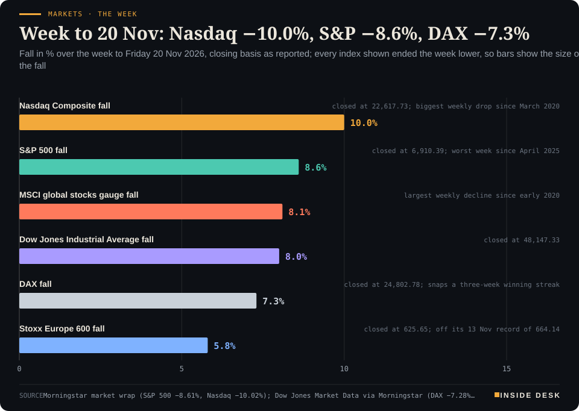
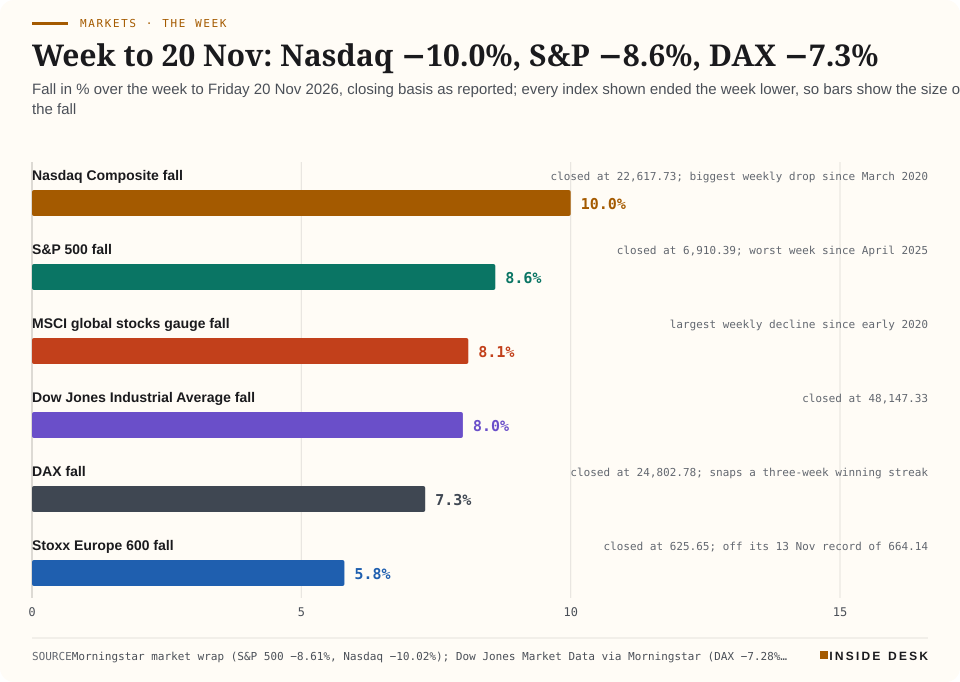
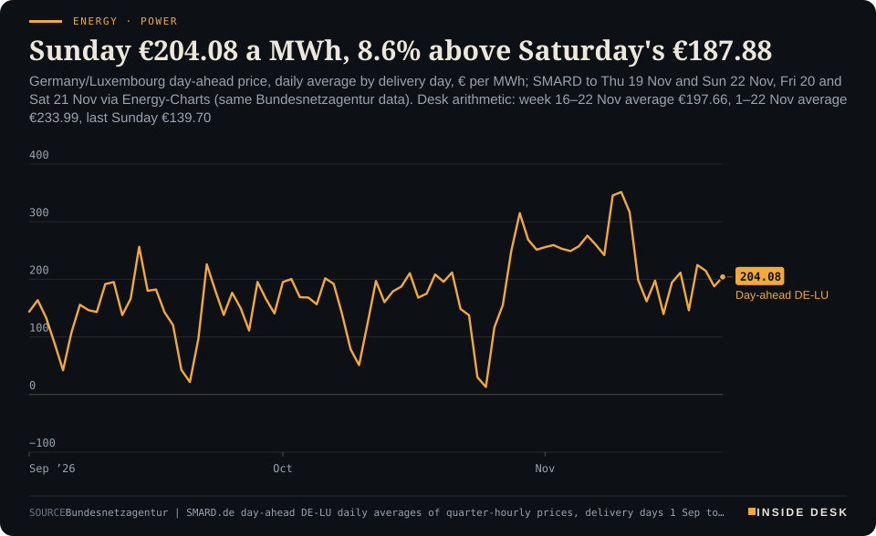
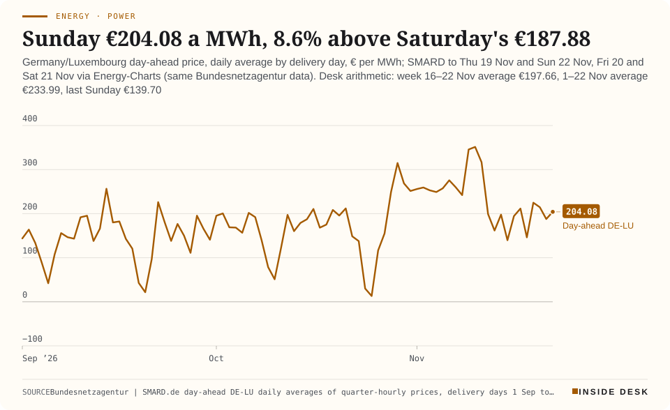
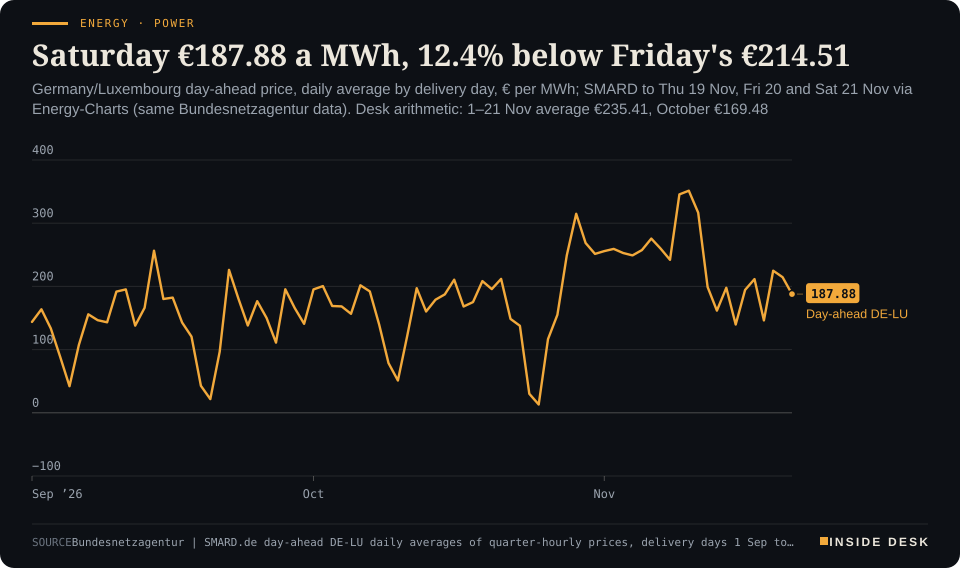
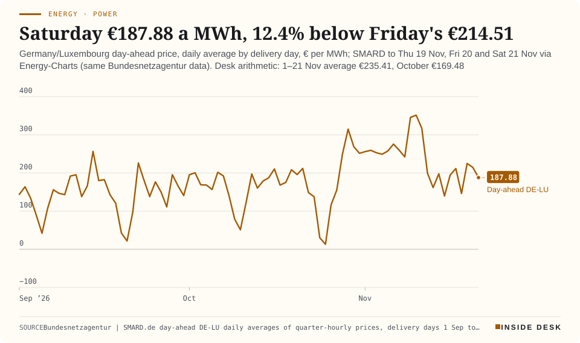
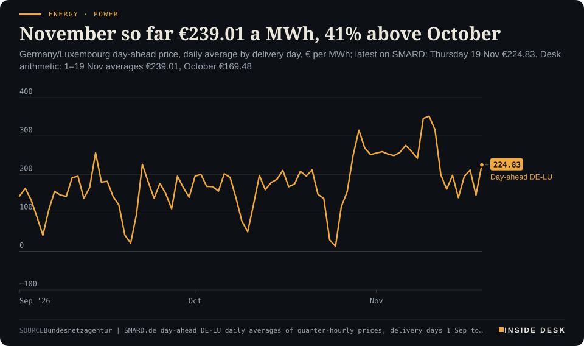
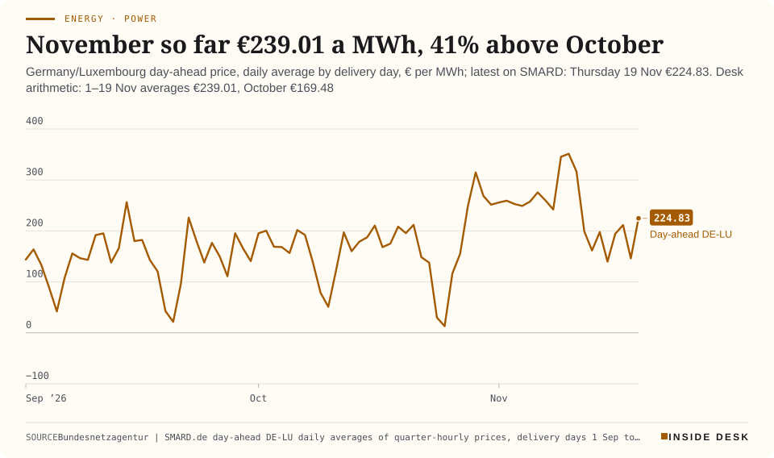
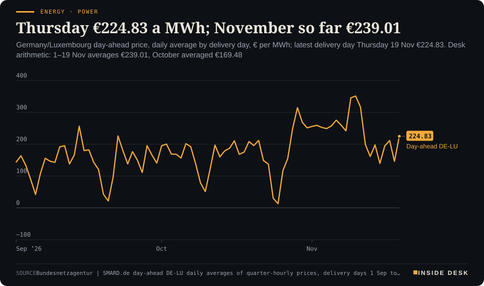

Inside Desk ePaper, Sunday Magazine · Sun 22 Nov 2026
Sunday, 22 November 2026Always free
Inside Desk
The Sunday MagazinePublished 10:00 CET · Berlin
Cover story · Markets & Macro
The worst week since April 2025 was told in tickers, short reports and a fear gauge near 36. The documents underneath it, from Nvidia's balance sheet to Friday's rush into government bonds, tell a slower and more useful story.
The worst week for American shares since April 2025 made the noise, and the chip makers took most of it. Underneath, the dull machinery kept printing: Nvidia's receivables, a Brent price down for a third week, cheaper petrol at the pump, Antalya's paper and the rules for your next pension. This Sunday reads the invoices, not the speeches.
The screens spent the week marking down chips; the quieter machinery spent it cutting four cents off a litre of petrol, validating a country's antenatal clinics and printing the rules for your next pension.
Geo-economics · p. 5
Energy & Industry · p. 11
Climate & Weather · p. 20
The week in one sentenceThe screens spent the week marking down chips; the quieter machinery spent it cutting four cents off a litre of petrol, validating a country's antenatal clinics and printing the rules for your next pension.
ContentsInside Desk · Sunday Magazine22 November 2026
The worst week for American shares since April 2025 made the noise, and the chip makers took most of it. Underneath, the dull machinery kept printing: Nvidia's receivables, a Brent price down for a third week, cheaper petrol at the pump, Antalya's paper and the rules for your next pension. This Sunday reads the invoices, not the speeches.
11 edition pieces · 11 desks · Published 10:00 CET, 22 November 2026
22 ePaper extras, added , 22 November. They appear only in the ePaper and carry their own time.
18:30 Evening ePaper, updated live until 22:30 with an “Updated” time and a Latest page
Sun 10:00 The Sunday Magazine
Berlin time. Every issue is free.
How to read it
Swipe, use the arrow keys or the page strip. Tap any headline for the reading view. Press / to search, t for contents, +/− to zoom. Download the PDF.
The Sunday SequenceInside Desk · Sunday Magazine22 November 2026
Markets & Macro · The Sunday Sequence · 5 min
The worst week since April 2025 was told in tickers, short reports and a fear gauge near 36. The documents underneath it, from Nvidia's balance sheet to Friday's rush into government bonds, tell a slower and more useful story.
You did not need a terminal to know how the week went. You only needed to hear someone say “AI” in a worried voice. By Friday night the Nasdaq Composite had fallen 5.28% in a single session to 22,617.73, the S&P 500 3.70% to 6,910.39 and the Dow 949.73 points, or 1.93%, to 48,147.331,4. The S&P 500 and the Dow both closed more than 10% below their records, the textbook line for a correction, and the Nasdaq turned negative for the year, down 2.7%1.
A note for readers of Friday evening’s ePaper: its last update, stamped 22:02 CET, carried a Nasdaq fall of 4.81%; the settled close, reported later by CNBC and Reuters, was 5.28%1,4. The first number is rarely the final one.
The week, in one picture. Over five sessions the Nasdaq lost 10.02% and the S&P 500 8.61%, Morningstar calculated2; the Dow lost 8%1. CNBC called it the Dow’s worst week since March 2020 and the S&P 500’s worst since the tariff shock of April 20251. Europe did not escape: the DAX fell 7.28% to 24,802.78, its biggest weekly percentage loss since the week ending 4 April 20255, and the Stoxx Europe 600 5.80% to 625.656. MSCI’s gauge of stocks across the globe fell 8.1%, its largest weekly decline since early 20204.
Read the chart from the bottom up, not the top down. The further a market sits from the chips, the shorter its bar. The Stoxx 600, heavy with banks, insurers and food companies, lost the least. Even after this week it is up 5.65% for the year6, and the DAX is still up 1.28%5. The year’s gains have shrunk. In Europe they have not gone.
What was actually sold. This was not a general verdict on the economy. Morningstar’s sector table for the US market shows technology down 11.98% for the week and consumer defensives down 2.03%2. On Friday consumer staples was the only S&P 500 sector to finish higher4. The Philadelphia chip index fell 10.7% on Friday and 17.1% over the week4. Nvidia fell 14% on Friday and more than 20% over the week, AFP reported9; AMD lost 13% on Friday3, the day after a short seller’s report.
That report deserves a careful sentence, because careful sentences were scarce. On Thursday Hunterbrook Media, which disclosed a short position, alleged that AMD has “its own China problem”; the shares closed down 7.72% at $489.198. AMD replied that the claims “misrepresent AMD’s business practices and relationships” and said it complies with US export controls8. CNBC said it had not independently verified the allegations8. Neither have we. A short report is a case argued by someone who profits if you agree with it. A company statement is a case argued by someone who profits if you don’t. Both belong in the file. Neither is the verdict.
Then came the regulators. On Friday Reuters reported, citing sources, that the Securities and Exchange Commission’s probe into Nvidia is examining possible accounting issues1; on Saturday The New York Times reported that the inquiry is in its early stages, AFP summarised, adding that the probe could end without any charges9. Also on Friday, President Trump said he “would love to see Jensen be given a second chance”; Nvidia’s chairman Harvey Jones has ruled out a return for the former chief executive9. Hold those as what they are: reports and wishes, not findings.
The Sunday SequenceInside Desk · Sunday Magazine22 November 2026
Markets · The weekWeek to 20 Nov: Nasdaq −10.0%, S&P −8.6%, DAX −7.3%Fall in % over the week to Friday 20 Nov 2026, closing basis as reported; every index shown ended the week lower, so bars show the size of the fall


Bar chart of weekly falls in the week to Friday 20 November 2026, all indexes lower: the Nasdaq Composite fell 10.0 percent to 22,617.73, the S&P 500 8.6 percent to 6,910.39, MSCI's gauge of stocks across the globe 8.1 percent, the Dow Jones Industrial Average 8.0 percent to 48,147.33, Germany's DAX 7.3 percent to 24,802.78 and the Stoxx Europe 600 5.8 percent to 625.65. Bars show the size of the fall.
Source: Morningstar market wrap (S&P 500 −8.61%, Nasdaq −10.02%); Dow Jones Market Data via Morningstar (DAX −7.28%, Stoxx 600 −5.80%); CNBC and Investopedia (Dow −8%); Reuters (MSCI world −8.1%, closes); all 20 Nov 2026, retrieved 22 Nov 2026 · reported figures · CSV
The invoice that came first. Strip away the week’s noise and one document stands taller than all the rest. On Tuesday Nvidia reported third-quarter revenue of $115.8 billion, up 103% on a year earlier, with $107.6 billion from data centres and net income of $65.3 billion7. It guided to $130 billion, plus or minus 3%, for the fourth quarter, which includes an extra week, and it is assuming no data-centre compute revenue from China7. Investopedia’s verdict on the week was blunt: Nvidia and Anthropic “delivered on their end”, and it still was not enough3.
That sounds like a paradox. It is not, once you open the balance sheet rather than the headline. On 25 October Nvidia’s accounts receivable stood at $81.0 billion, against $38.5 billion on 25 January; inventories were $39.7 billion, against $21.4 billion7. Desk arithmetic: receivables have risen about 111% in nine months and inventories about 86%; receivables now equal about 70% of one quarter’s revenue.
None of that is a warning sign by itself. A company growing this fast sends more invoices and holds more parts, and the same release reports that its Vera Rubin NVL72 systems have shipped7. But it tells you where the story now lives. Revenue is recorded when the goods are delivered and invoiced. Cash arrives when the customer pays. …
Geo-economicsInside Desk · Sunday Magazine22 November 2026
Geo-economics · 2 min
On Saturday Singapore's prime minister talked canals and AI rules with China's premier. The same week, US officials told Singapore's regulators that Iran's lifelines are not up for negotiation.
Two meetings, one city-state, one week. On Saturday Lawrence Wong, Singapore’s prime minister and finance minister, met Li Qiang at Diaoyutai in Beijing and stayed for lunch1. Earlier in the week, US Treasury officials met Singapore’s and Malaysia’s regulators and national security bodies to warn of the risks of not complying with US sanctions on Iran2. You could read that as a squeeze. The documents read more like two ledgers being kept in parallel.
The Beijing ledger is infrastructure. Singapore’s readout lists the three government-to-government projects in Suzhou, Tianjin and Chongqing, and, under the Chongqing Connectivity Initiative, a search for “synergies” between the International Land-Sea Trade Corridor and China’s new Pinglu Canal1. The two sides also agreed to improve interoperability between their AI governance frameworks through “a joint mapping exercise”, and looked to ASEAN–China cooperation, including the upgraded free-trade area, during Singapore’s ASEAN chair year in 20271. They “reiterated the importance of international law and the right to freedom of passage in international waterways”1.
The Washington ledger is compliance. Officials asked for extra scrutiny of “high-risk” sectors, maritime transport, aviation services and procurement networks, to make sure firms are “not fronting for Iran”2. One official said: “it’s not going to be a negotiation when we find a lifeline that needs to be targeted”2. Tankers have long used the waters off Malaysia, Singapore and Indonesia for ship-to-ship transfers of Iranian oil, and in July Treasury sanctioned individuals, vessels and companies in places including Singapore2. Singapore’s government said it “is firmly committed to doing our part”2.
Neither ledger is dramatic, and that is the point. …
Geo-economics · Short item · ePaper extra, added
India's finance minister wants the trade deal closed early. Her commerce minister has added a condition, and a new US law has added a worry.
Trade deals are finished by lawyers, not by ministers. India’s is now with the lawyers.
Speaking on Friday at the Atlantic Council on the sidelines of the World Bank and IMF annual meetings in Bangkok, Finance Minister Nirmala Sitharaman said she hoped the India–US deal would be concluded at the earliest1. On Thursday Commerce Minister Piyush Goyal said the first phase had been finalised and was being legally drafted, and would be operationalised once India secures an export advantage over its competitors in the US market1. The US ambassador, Sergio Gor, said the “big items are done”1.
The base is already moving. Under the framework agreed in February, the tariff on most Indian goods came down from 50% to 18%1. The United States remained India’s largest goods export market in the first half of the fiscal year, with shipments up 11% on a year earlier to $50.8 billion1.
The complication is oil. A new US law lets President Trump impose tariffs of up to 100% on countries buying Russian oil, and New Delhi has said it will take all necessary steps for the energy security of its 1.4 billion people1.
Sitharaman’s other theme was the plumbing of the system itself: the IMF and World Bank, she said, must be more “nimble-footed”, because countries in balance-of-payments trouble cannot wait “three or four years” for a solution1.
The thing to watch is not the next optimistic quote. It is the legal text, and whether its tariff schedule says what Goyal’s condition requires.
Geo-economicsInside Desk · Sunday Magazine22 November 2026
Geo-economics · Brief · ePaper extra, added
The EU and Mexico signed a modernisation of their 2000 trade agreement in May; the EU ratified the interim deal in July; Mexico’s Senate has yet to schedule its vote1. Christophe Hansen, the EU’s agriculture commissioner, said in Mexico City he had a “good feeling” it could pass by the end of the year1.
The backdrop is the US-Mexico relationship: in July Washington declined to extend USMCA, opening annual reviews over trade worth $960 billion a year, and the US buys roughly 80% of Mexico’s exports1. “If it’s harder to access the U.S. market, then it’s only natural we look elsewhere,” Hansen said1.
Once in force, the deal cuts tariffs on the bulk of bilateral food trade1. The date that matters is the Senate’s, and it has not been set.
Markets & MacroInside Desk · Sunday Magazine22 November 2026
Markets & Macro · Short item · ePaper extra, added
The sell-off was not only American and not only in chips. Asia took the hardest hit, and two of the usual hiding places did not hold.
If you only watched New York, you missed the steepest fall of the week. Taiwanese shares lost 17% over five sessions, their biggest weekly decline since 1990, Reuters reported1. On Friday alone Japan and Korea fell more than 5%; the Nikkei closed down 5.06%1. Emerging-market stocks lost 3.10% on the day and MSCI’s index of Asia-Pacific shares outside Japan 3.27%1. Taiwan is home to much of the world’s chip manufacturing, so a fall there is less a mood than a calculation about future invoices.
The more surprising lines are in the shelter column. Gold did not shelter: spot gold fell 2.81% on Friday to $3,520.09 an ounce, a 14-month low, after its largest weekly drop in eight months1. Silver fell 4.22% to $40.95 and copper 2.9% to $12,162.50 a tonne1. Bitcoin, sold to some as digital gold, was near $59,000 late on Friday, its lowest since June, Investopedia reported2.
What held was the dull option. US Treasuries rallied and the dollar index barely moved, down 0.05% at 103.90 after touching a 19-month high on Thursday1. The yen firmed, with the dollar 0.67% weaker at 158.6 yen1. “It’s a little bit early to pick a top for the dollar,” said Marc Chandler of Bannockburn Capital Markets1.
The lesson is old and unglamorous. In a scramble, the asset that works is the one backed by a state’s tax receipts, not by a story. Nothing here is investment advice.
Markets & Macro · Brief · ePaper extra, added
Of the 882 US-listed companies Morningstar covers, 824, or 93%, fell in the week to Friday; 58 rose1. Its US total market index lost 8.51% and is still up 4.96% for the year1. The fall had a shape. Growth stocks lost 10.06%, value stocks 6.75%; large caps 8.67%, small caps 7.24%1. Technology fell 11.98%, consumer defensives 2.03% and utilities 3.4%1. When nearly everything falls, look at what fell least: the companies selling toothpaste and electricity, whose invoices get paid in any weather. Nothing here is investment advice.
Politics & InstitutionsInside Desk · Sunday Magazine22 November 2026
Politics & Institutions · 2 min
The week the coalition bought a 2027 electricity-tax cut with money it expects to find on the EEG account, and its own parliamentary leader put the price of 2028 at €30 billion.
The Bundestag had a week without plenary sittings6, which is exactly why the sequence matters: everything that happened, happened in rooms with fewer cameras. Here it is in five steps.
1. The night. The coalition committee of CDU, CSU and SPD met on Tuesday and agreed in the early hours of Wednesday to cut the electricity tax for all consumers and companies, but only for 20272. Until now the lower rate applied only to manufacturing, agriculture and forestry3. The missing €5.4 billion is to come from projected room on the EEG account; how the years after are paid for is open2. The SPD had wanted more than a one-year financing, ARD reported, because the finance minister would otherwise stand alone when the money for 2028 has to be found1.
2. The bill for 2028. Within hours the Union’s parliamentary leader Thorsten Frei put a number on that worry: a funding gap of €25 billion for 2028 as things stand, €5 billion larger because of the tax cut2. Desk arithmetic: €30 billion. “The challenges are enormous,” he said, adding that the coalition could not move “in small steps of 100 million euros” and would want 4% annual growth to pay for every wish2. The federal finance plan, as cited by ARD, puts the 2028 hole at around €22 billion and €48 billion by 20301. Two numbers for the same year are not a scandal; they are a reminder that a gap is an estimate until the budget law says otherwise.
3. What did not happen. There was no agreement on offsetting cold progression, so a pay rise that only matches inflation can still leave less in real terms1. First estimates put household savings from the tax cut at roughly €3 to €8 a month, while statutory patients will pay €5 to €7.50 more per prescription in 20271.
4. The Länder’s Friday. The Bundesrat approved the emergency-care reform and active cyber-defence powers for the security authorities, and sent the start-chances law for early childhood to the mediation committee because the Länder say the Bund sets new Kita standards without funding them4.
Politics & Institutions · Short item · ePaper extra, added
The Union's parliamentary leader wants work on the 2028 budget to start before Christmas, and says small savings will no longer do.
Most of the week’s attention went to the night the coalition agreed its electricity-tax cut. The more durable sentence came a day later, from the man who has to get budgets through the Bundestag.
Saturday was a day of delegate arithmetic. In Pfiffelbach, Björn Höcke was re-elected leader of Thuringia’s AfD with 314 yes votes, 39 no and five abstentions, which the party put at 88.95% because abstentions are not counted1. The state branch is classified as confirmed right-wing extremist by Thuringia’s domestic intelligence service, which Höcke called a “political instrument of struggle”1,2. In Ilmenau, the SPD elected Thuringia’s social affairs minister, Schenk, to succeed the outgoing leader Maier, who did not stand again2. In Bad Oldesloe, Nicole Baer won the AfD’s top list place for Schleswig-Holstein’s April election in a run-off with 166 of 331 delegate votes against 158 for her rival1.
Desk arithmetic: Baer’s margin was eight votes. Conventions are where parties count themselves before voters do.
Psychology & BehaviourInside Desk · Sunday Magazine22 November 2026
Psychology & Behaviour · 2 min
The largest German survey of its kind, 8,000 working people for the Federal Anti-Discrimination Agency, finds that telling your employer about a mental illness is the riskiest moment, whether you chose to or not.
The Federal Anti-Discrimination Agency published two studies on Tuesday: a representative online survey of about 8,000 people in work, which it calls the largest of its kind so far, and a qualitative study with people affected and with works-council and company representatives1. The work was carried out by the Institute for Work, Skills and Training at the University of Duisburg-Essen1.
The base figure. More than one in four respondents, 27.4%, said they had a mental illness now or in the past1. Of employees with a mental illness, almost 40% had experienced discrimination at work during their careers1.
The annex is in the forms it takes. The most common was having one’s performance rated worse or belittled (46.6%), followed by being treated disrespectfully or inappropriately (44.6%)1. About a third experienced bullying (31.7%) or found that their qualifications were not properly taken into account (31.4%)1. In 30% of cases colleagues or managers raised the illness without being asked1.
And in what follows. More than half of those discriminated against, 52%, felt insecure and withdrew; 46.8% reported lower motivation and performance; 42.3% fell ill again and were off for a time; and 39.5% left their employer1. The agency’s finding with most practical weight: the risk is especially high once an illness becomes known at work, and it hardly matters whether people disclosed it themselves or it came out1. That leaves people with a dilemma the report names plainly: openness can bring support, but also disadvantage; silence often means going without help1. “Nobody should have to be afraid to talk about a mental illness at work,” said Ferda Ataman, the independent federal commissioner1.
Psychology & Behaviour · Short item · ePaper extra, added
Hamburg's long-running survey finds young people still a little worse off than before the pandemic, with anxiety now attached to housing, war and money.
The COPSY study at the University Medical Center Hamburg-Eppendorf has been asking the same families how their children are since 2020; this autumn’s ninth round covered about 1,500 families with children aged 7 to 211.
The overall picture is still slightly worse than before the pandemic. Around 25% have anxiety symptoms, against 15% before; around 21% report reduced quality of life, also against 15%1. Parents report signs of mental-health problems in 24% of 7- to 21-year-olds, against 18% before the pandemic2. Yet seven in ten are psychologically stable: “not a whole generation” is suffering lasting effects, says co-author Ulrike Ravens-Sieberer1.
The worries have moved. About one in six young people has become more anxious in recent years, linked to wars, economic worries and climate; 42% said they worry about affordable housing1. “Young people’s worries have shifted from the pandemic to the crises of the present,” Ravens-Sieberer says1.
The gap that matters is between groups. Around 6% have been doing badly continuously since 2020; they started with fewer personal, family and social resources and more often had parents under strain1. Girls report anxiety symptoms at 33% against 17% for boys, and depressive symptoms at 17% against 9%, a gap widening again since 20231.
The psychotherapists’ chamber asks for prevention in Kitas and schools joined up with youth services, and welcomes separate planning of therapy places for children and adolescents2. Support, in other words, is a matter of addresses and appointments, not slogans.
Psychology & BehaviourInside Desk · Sunday Magazine22 November 2026
The psychosomatic clinic at Freiburg University Hospital wants to know whether a placebo can help when people know it contains no active ingredient1. Participants are adults under psychological strain who have sought professional help or an outpatient therapy place in the past six months and have not started therapy, or will not for at least four weeks1. One group takes open placebos, edible wafers of potato starch, water, oil and food colouring in seven named variants, for four weeks; the other gets them after a four-week wait1. Results come from online questionnaires1. “The search for a psychotherapy place can be very challenging,” says project lead Stefan Schmidt1.
No deception, no promise: a modest experiment aimed at the waiting room the system has not yet emptied.
Energy & IndustryInside Desk · Sunday Magazine22 November 2026
Energy & Industry · 2 min
Germany's day-ahead power price rose 8.6% from Saturday to Sunday. The forecasts behind the auction show the turbines doing half the work, and the week still closed about a fifth cheaper than the last.
Your Sunday electricity in Germany and Luxembourg was bought on Saturday at an average of €204.08 per megawatt hour, SMARD’s quarter-hourly data show1. Saturday’s delivery day had cleared at €187.882. Desk arithmetic: Sunday is €16.20, or 8.6%, dearer than Saturday, and €64.38, or 46%, dearer than last Sunday’s €139.701. A Sunday is supposed to be the cheap day of the week. This one was not.
Energy · PowerSunday €204.08 a MWh, 8.6% above Saturday's €187.88Germany/Luxembourg day-ahead price, daily average by delivery day, € per MWh; SMARD to Thu 19 Nov and Sun 22 Nov, Fri 20 and Sat 21 Nov via Energy-Charts (same Bundesnetzagentur data). Desk arithmetic: week 16–22 Nov average €197.66, 1–22 Nov average €233.99, last Sunday €139.70


Line chart of the daily average German-Luxembourg day-ahead electricity price from 1 September to 22 November 2026, in euros per megawatt hour. Prices mostly ran between about €100 and €210 in September and October, climbed above €250 from late October, peaked at €351.48 on Tuesday 10 November, fell to €139.70 on Sunday 15 November, moved between €146.25 and €224.83 during the week of 16 November, dipped to €187.88 on Saturday 21 November and stand at €204.08 for the latest delivery day, Sunday 22 November.
Source: Bundesnetzagentur | SMARD.de day-ahead DE-LU daily averages of quarter-hourly prices, delivery days 1 Sep to 19 Nov and 22 Nov 2026, retrieved 22 Nov 2026, 09:17 CET; delivery days Fri 20 and Sat 21 Nov from Fraunhofer ISE Energy-Charts (data: Bundesnetzagentur | SMARD.de), retrieved 22 Nov 2026, 09:17 CET · CC BY 4.0 · CSV
Half the wind. The forecasts that traders bid against tell the story. Energy-Charts’ day-ahead forecast put German onshore and offshore wind at about 611 GWh for Saturday and about 309 GWh for Sunday; solar was forecast at about 94 GWh and about 62 GWh3. Desk arithmetic: Sunday’s expected wind output is roughly half of Saturday’s. When the turbines step back, the plants that burn gas and coal step forward, and they set the price.
The shape of the day. Sunday’s dearest quarter-hour starts at 17:00, at €242.94, as the lights come on and the sun has gone; the cheapest is the last one, from 23:45, at €181.192. …
Energy & Industry · Short item · ePaper extra, added
Oil ended its third losing week at $92.57. The ledger of the fall is more useful than any single day's headline.
Front-month Brent crude for January delivery settled at $92.57 a barrel on Friday, Dow Jones Market Data reported1. That is $3.27, or 3.41%, lower on the week, and the third weekly fall in a row1. Over those three weeks the price has lost $25.07, or 21.31%, the largest three-week net decline since the week ending 24 October 20081.
Friday itself was a small up day: plus 59 cents, or 0.64%, the second gain in a row1. Brent is 21.78% below its 2026 settlement high of $118.35, set on Tuesday 31 March, but still 52.13% higher than at the start of the year1. Desk arithmetic: that leaves the barrel about $31.72 dearer than at the end of 2025, even after November’s slide.
Read the two halves together. A fall of a fifth in three weeks is a large move by any standard, and the comparison with 2008 is striking. But a price that is still half as high again as in January has not returned to calm; it has given back part of a spike. For you, the useful number arrives later, at the pump and in heating-oil invoices, where refiners, distributors and taxes stand between the barrel and the bill. Watch whether this week’s falls show up there before you watch the next headline. Nothing here is investment advice.
Energy & IndustryInside Desk · Sunday Magazine22 November 2026
Energy & Industry · Brief · ePaper extra, added
Germany’s gas storage stands at 56.73% full in the latest reading, 0.25 points down on the day before, against a European average of 69.36%, the Allgäuer Zeitung’s tracker reports1. On 1 November the German figure was 61.17%; a year earlier, on 1 November 2025, it was 75.00%1. Desk arithmetic: that is 4.44 points drawn in three weeks, and a gap of 12.63 points to the European average. The Bundesnetzagentur said in mid-October that supply was “stable”, because pipelines from Norway and LNG terminals carry much of the load1. Storage is a buffer, not the whole supply chain. Nothing here is investment advice.
Money, FX & CommitteesInside Desk · Sunday Magazine22 November 2026
Money, FX & Committees · Podium vs Print · 2 min
On Saturday Spain's prime minister said the banks have no grounds to grumble about a levy he will extend to 2027. Their own results, tallied by EFE last month, are the page to read beside him.
Podium
“I don't think Spanish banks have any reason to complain (our translation).”
Pedro Sánchez, Prime Minister of Spain, interviewed on Onda Cero's 'Julia en la Onda', Saturday 21 November 2026
Print€29,253 million
Combined January–September profit of Santander, BBVA, CaixaBank, Sabadell, Bankinter and Unicaja, up 15.09% on a year earlier; €9,088 million of it in the third quarter alone.
EFE tally of the nine-month results of Spain's six largest banks, Friday 30 October 2026
The podium. On Saturday morning, on Onda Cero, Pedro Sánchez announced what he called a “surprise” for the last cabinet meeting before Spain votes on 29 November: the tax on banks will be extended “until 2027”, raising, he said, €1,400 million for housing, from protected homes to tax relief for tenants and renovation1. Then the line aimed at the banks themselves: “I don’t think Spanish banks have any reason to complain,” he said, adding that a look at their income statements shows they have made their money under his government (our translation)1. Within the hour he repeated the pledge in a video: “In the game, the bank always wins. But democracy is not a game” (our translation)1.
The print. Spain’s six largest banks earned a combined €29,253 million between January and September, 15.09% more than a year earlier, according to EFE’s tally of their results2. Santander alone booked €12,405 million, up 20%; BBVA €9,066 million, up 13.6%; CaixaBank €4,962 million, up 12.9%2. In the third quarter alone the six made €9,088 million2.
The gap. On the headline, the print backs the podium. Desk arithmetic: €1,400 million is about 4.8% of what the six earned in nine months; the reports do not say over how many years the €1,400 million would be collected, so read that ratio as scale, not as a rate1,2. And the print has small print. Santander’s figure includes a net gain of €1,895 million from selling its Polish arm; its ordinary profit was €11,176 million, still a record, up 16%2. Sabadell’s profit fell 1%, and 5.3% on an underlying basis2. “The banks” are not one balance sheet.
What the podium does not say. Government sources told EFE the money could fund more than 6,000 affordable homes, renovate 52,000 and give tax breaks to almost 120,000 tenants “during the next legislature”1. That is a programme for a parliament not yet elected, announced in the last week of a campaign. The extension still needs Tuesday’s cabinet to become law at all1.
Money, FX & Committees · Short item · ePaper extra, added
Ministers want more than the treasury says it can afford, and the bill is being met with borrowing.
Budgets are not written once. In Romania this year, one is being rewritten for the second time, and the asking price keeps rising.
The government is drafting a second budget rectification, the mid-year adjustment of spending and revenue, and requests from ministries have climbed to about 70 billion lei, up from earlier estimates of 60 billion1. Finance Minister Alexandru Nazare has called the requests exaggerated and said the country cannot afford allocations on that scale1. The aim is to close the rectification by the end of November1.
Money, FX & CommitteesInside Desk · Sunday Magazine22 November 2026
Money, FX & Committees · Brief · ePaper extra, added
Kyriakos Pierrakakis, Greece’s finance minister and Eurogroup president, put a rule in print this weekend: “The election calendar cannot determine the endurance of the economy” (our translation)1. Any additional fiscal room, he said, would go to society1.
His figures: a family of two average earners with two children took home about €33,000 net in 2019 and more than €44,500 in 2025, part of it, he conceded, absorbed by higher prices1. Permanent measures for 2027 come to €2.2 billion1.
Desk arithmetic: that is roughly 35% more take-home pay over six years, before inflation1. The useful test is the one he set himself: whether next year’s budget still reads the same once the campaign starts. Nothing here is investment advice.
Ordinary & Inherited LifeInside Desk · Sunday Magazine22 November 2026
Ordinary & Inherited Life · 3 min
Germany's Riester pension gives way to a new subsidised product on 1 January. The rules are printed, the adverts have started, and the most useful line in the official guidance is the one telling you not to hurry.
The Ordinary Ledger takes the week’s big numbers and turns them into lines on a household budget. This week the screens were full of falling chip shares. The quieter document that matters for more kitchen tables was a list of rules: from 1 January 2027 the Riester pension is replaced by new state-subsidised products, and on Friday Stiftung Warentest reminded those who already hold a Riester contract what they can do in the meantime1,2.
What the state adds. For every euro you pay in up to €360 a year, the state adds 50 cents; for further euros up to €1,800, it adds 25 cents. The maximum subsidy is €540 a year1. The minimum contribution is €120 a year, or €10 a month; each child brings up to €300 a year, euro for euro; and anyone who signs before their 25th birthday gets a one-off €2001. Desk arithmetic: at the minimum €120 the subsidy is €60; at €1,800 it is €540, or 30% of what you pay in. There are three product types: a free pension depot, a standard depot with effective costs capped at 1.0% a year in the savings phase, and a guarantee product covering 100% or 80% of contributions1.
What it costs to leave. If you hold a Riester contract, you can keep saving under the old rules, switch your existing contract into the new subsidy system, or move to a new contract; past subsidies do not have to be repaid either way1. The old provider may charge a flat €150 for a transfer in the first five years, and the new provider may charge a one-off fee of at most €1501. Desk arithmetic: a move can cost up to €300 in fees, more than half of a full year’s maximum subsidy. And one line deserves a highlighter: if you do switch, instruct the new provider to carry out the transfer, and do not cancel the old contract yourself, or you could lose subsidies1.
What it costs to stay well. If your Riester policy invests in funds, you may be able to swap the funds inside it. Stiftung Warentest’s database now names the best available funds for 72 Riester fund policies, drawn from more than 1,800 funds the insurers offer; the swap usually costs nothing, and the testers suggest no more than three funds2. Its first choice is a broad-market equity ETF that can be left alone for years2.
Ordinary & Inherited Life · Short item · ePaper extra, added
Stiftung Warentest added 11 electric toothbrushes to its database this week. Good ones start below €20; the real price sits in the bathroom cabinet.
The week in the bathroom cabinet: on Friday Stiftung Warentest added 11 new electric toothbrushes to its results, bringing the database to 37 models, with grades from good to poor and prices from €12 to more than €2001. …
Ordinary & Inherited Life · Brief · ePaper extra, added
The week’s record listing raised $107.3 billion; the shares were issued at $83, opened at $111.50 and left regular US trading on the first day at $97.171. If you hold a world-equity ETF, Stiftung Warentest’s reading is calmer than the adverts that urged you to “be part of the IPO”1. Index weights count mainly the freely traded shares, and only about 5% of Anthropic’s are; Vanguard estimates the company will make up at most 0.15% of its world-equity ETFs1. SpaceX, listed in June, was under 0.1% of the MSCI World on 13 November; MSCI’s fast-entry rule could add Anthropic on 1 December at the earliest1. Desk arithmetic: on a €100 monthly savings plan, 0.15% is 15 cents. Nothing here is investment advice.
Tech & ComputeInside Desk · Sunday Magazine22 November 2026
Tech & Compute · 2 min
Signal is switching off screenshots because the operating system's own AI now reads your screen. Its president calls that an existential threat; the remedy she asks for is documentation.
For a decade the promise of an encrypted messenger was simple: nobody between you and the person you write to can read it. This week Signal said that promise now has a hole at the end of the line, where the message is displayed1.
The company will block screenshots inside its app on iOS 27, and on Android it will switch on its “Screen security” setting automatically when it detects an AI assistant trying to read the screen1. Last year it did the same on Windows 11 against Microsoft’s Recall1. The reason, in Meredith Whittaker’s words: the operating systems’ agents “scan” what is on screen, and once captured, your data is “made accessible to whatever local database or remote server an OS-level AI agent is using at that moment”1,2. She calls it “an existential threat to Signal”1.
Read the footnotes, because that is where the engineering sits. On many Android builds Signal cannot reliably detect a blocked screenshot, so it watches for the assistant instead1. On macOS it cannot block screenshots at all; the only advice for macOS 27 users is to add Signal to Siri’s Excluded Apps list in System Settings1. And Signal concedes that screenshot blocking does not stop “more sneaky ways”, such as an agent reading content already in the file system1,2. You can switch the protection off, at the price, Signal says, of breaking its privacy guarantees for you and your contacts1.
What it asks for is not a ban. It is two dull things: an easy, documented way for an app to opt out of AI data access, and proper technical documentation of how the agents work1. Signal says it has spent months on “forensic investigations” just to learn what the assistants do with app data1. It also names a third party: agents such as Meta’s Muse that use accessibility permissions, built for people who need them, as “a skeleton key”1.
Tech & Compute · Short item · ePaper extra, added
A lab demonstration took an AI agent from reading a malicious page to controlling its own cloud machine. Every control worked as designed; the chain still ran.
Meta’s Muse is a personal AI agent that works through the accounts you connect to it and can buy things on your behalf; each user’s agent runs on its own cloud computer1. Its designers said at launch they built it “to assume the agent may be under attack and limit the potential damage”1.
Researchers at the security firm NebuSec have now shown how far one page can go. A malicious webpage opened by the agent could copy a user’s conversation history and stored memories to an outside server, and alter them, with no prompt shown1. …
Tech & Compute · Brief · ePaper extra, added
Anthropic has closed its listing: 1,127,000,000 shares at $83.00, gross proceeds of about $93.5 billion, of which about $91.6 billion went to the company1. Alongside it, a private placement of Class N shares to AMD, Broadcom, Google, Micron, Microsoft, NVIDIA and TSMC Partners raised about $26.0 billion1.
Desk arithmetic: roughly 22% of the new money Anthropic took in came from seven chip, memory and cloud companies rather than from the public offer1.
That is the “circular” financing NPR’s week-in-review flagged as a worry: Nvidia, it noted, owns shares in AI companies such as Anthropic and lends to them, while they buy its chips2. The shares rose 17% on debut and ended Friday near the issue price2. The invoice to watch is not the share price. It is what Anthropic spends with those seven names in the quarters ahead, line by line in its filings. Nothing here is investment advice.
Health & CareInside Desk · Sunday Magazine22 November 2026
Health & Care · 2 min
The EMA's November opinions include a first-in-class blood-pressure pill and a new line on Mounjaro and the contraceptive pill. None of it is in a pharmacy yet.
Europe’s medicines committee, the CHMP, met from 9 to 12 November and recommended seven new medicines for approval, plus extended indications for 11 that are already on the market, the European Medicines Agency reported1. That brings this year’s tally to 79 positive opinions on new medicines, eight negative ones and 108 extensions1. The list is less exciting than a launch event, and more useful: each line is a dossier somebody had to defend.
A new kind of blood-pressure pill. The most widely relevant recommendation is Baxfendy, AstraZeneca’s baxdrostat, for adults whose high blood pressure is not controlled by at least two existing medicines2. It is a selective inhibitor of aldosterone synthase, the enzyme behind a hormone that makes the kidneys hold on to salt and water2. The committee cites “clinically relevant and statistically significant” falls in systolic and diastolic pressure in placebo-controlled trials; the most common side effect is hyperkalaemia, too much potassium in the blood2. If you are on two or three tablets already, that last word is the one your doctor will watch.
The rest of the list. The committee also backed two lung-cancer medicines, aumolertinib and sintilimab, two insulin-aspart biosimilars for patients from the age of one, and two generics1. It recommended extending obinutuzumab to adults with moderate-to-severe lupus1. After re-examination it upheld refusals for two medicines, a sufentanil/ketamine product for children’s acute pain and arimoclomol for Niemann-Pick disease type C, and two other applications were withdrawn1.
A line about the pill. The committee adopted a safety letter to doctors on Mounjaro (tirzepatide) and oral contraceptives1. Women using the pill are advised either to add a barrier method for four weeks after starting tirzepatide and four weeks after each dose increase, or to switch to a non-oral method1. It is the kind of dull, specific advice that prevents real harm.
For you. A positive opinion is not a prescription. The Commission’s decision normally comes 67 days after adoption2. Desk arithmetic: for opinions adopted on 12 November, that points to around 18 January 2027. …
Health & Care · Short item · ePaper extra, added
Germany's vaccine committee updated its guidance on 17 November. The detail is in who should get which shot.
Germany’s standing vaccine committee, STIKO, recommends a chikungunya jab for people aged 12 and over who travel to an area with a current outbreak, the Robert Koch-Institut’s guidance, updated on 17 November, says1. …
Health & Care · Brief · ePaper extra, added
The EMA’s human medicines committee recommended a new 100 mg strength of the dapivirine vaginal ring, which reduces the risk of HIV-1 infection through vaginal intercourse in women aged 16 and over1. The new strength lets the ring be replaced every three months instead of every month1. Desk arithmetic: that is four rings a year instead of twelve, or eight fewer ring changes a year for each woman. The opinion came under EU-Medicines for all, a procedure for medicines meant for use outside the EU, with experts from the WHO and regulators from Kenya, South Africa and Zambia taking part1. Fewer appointments is not a small thing; it is often the difference between a prevention plan and a prevention habit.
Security & OrderInside Desk · Sunday Magazine22 November 2026
Security & Order · 2 min
On Friday Tallinn made it formal: from 07:00 on 1 December, no people or vehicles cross the road border with Russia for six months. By Saturday there were queues in Ivangorod.
Last weekend Estonia’s foreign minister announced a border closure. On Friday the government took the formal decision, and the document is both wider and more careful than a headline1,2. Road crossings for people and vehicles are suspended at all five checkpoints, Narva-1, Narva-2, Koidula, Luhamaa and Saatse, from 07:00 on 1 December1,2. After six months the government will assess whether the restriction is still needed1. Rail freight continues under existing restrictions and strict customs controls1.
The reasons are listed, not shouted. Defence companies in Estonia have been attacked twice this year, and the Internal Security Service says both attacks were commissioned by Russian intelligence1. “Estonia is acting calmly and deliberately, but decisively,” said prime minister Kristen Michal1. Foreign minister Margus Tsahkna insisted the closure “is not a reaction to a single incident” and named similar attacks on defence industry in Bulgaria, Poland and Germany this year4. The government’s own claim is modest: the closure “will not eliminate all threats”, but removes “one significant security vulnerability”, recruitment and sanctions evasion across the border1.
The numbers behind the gate. Annual crossings fell from more than four million before 2022 to around 760,000 in 2026, ERR’s figures cited by Euronews show; about 447,000 of them went through Narva–Ivangorod3. Reuters counted 307,000 crossings by Russian nationals this year, 175,000 by Estonian citizens and 54,000 by Finnish passport holders3. Desk arithmetic: Narva carried nearly six in ten of this year’s crossings, which is why the bill lands there. Goods exports to Russia are down to around a third of their 2021 level, so the government calls the economic impact limited1.
The cost is local. By Saturday people with suitcases and plastic bags were queuing in Ivangorod to get across before the deadline3. …
Security & Order · Short item · ePaper extra, added
The Bundesrat signed off on Friday. The BKA and federal police may now redirect malicious traffic and delete or alter data on attackers' systems; critics call it hack-back.
The law to strengthen cyber security cleared its last parliamentary step on Friday, when the Bundesrat gave its consent at its 1,070th session1. It is due to enter into force the day after promulgation2.
What changes is the job description. The Federal Criminal Police Office (BKA) gets a new task of averting threats to IT security: it may block and redirect malicious traffic and prohibit the operation of an IT system2. The BKA and the federal police may collect, delete or alter data on IT systems, including servers from which an attack originates, without the owners’ knowledge2. The BSI is to detect attacks and their preparation better, and providers of digital services must pass its warnings on to affected customers2. Interior minister Alexander Dobrindt called it a shift “from detection towards defence”2. On Friday his parliamentary state secretary Daniela Ludwig said purely preventive measures were “unfortunately no longer sufficient”4.
The Bundestag passed it on 12 November with CDU/CSU and SPD; AfD, Greens and Left voted against3. Experts at the hearing asked for a full judicial-warrant requirement, and the Länder had asked for one for BKA interventions too; the government largely refused2. A constitutional challenge is “not ruled out”, JIPS notes2. Bitkom puts the annual damage from cyber attacks to German business at €160.4 billion to €205.8 billion3.
New powers are only as good as their paperwork: who orders, who logs, who checks afterwards. That is where to watch.
Security & OrderInside Desk · Sunday Magazine22 November 2026
Security & Order · Brief · ePaper extra, added
A tanker sailing outbound through the Strait of Hormuz was hit on its stern by an unidentified projectile about 11 nautical miles north of Khasab, Oman, the UK Maritime Trade Operations centre said on Saturday1. It later reported a tanker hit in the engine room 17 nautical miles east of Khasab; whether both reports concern the same ship was unclear1. No casualties were reported; the environmental impact was unknown1. Iran’s navy said a tanker caught fire after striking a mine in a restricted area east of the strait, an account Reuters could not verify1. A tanker near Khasab had already caught fire after an attack on Friday1.
The strait carried nearly a fifth of global crude supplies before the Iran war1. Each incident report is a line in an insurer’s ledger before it is a line in the news.
Climate & WeatherInside Desk · Sunday Magazine22 November 2026
Climate & Weather · 2 min
COP31 was due to close on Friday. On Sunday morning its cover decision was still a draft, and the words on the paper matter more than the speeches around it.
The UN climate conference in Antalya was scheduled to end on Friday 20 November2. When this note was written, at about 09:20 CET on Sunday, it had not. A third and, in theory, final draft of the cover decision was published overnight, now 94 paragraphs across 10 pages, The Guardian reported1. The closing plenary meant to adopt it slipped from 09:00 Turkish time to 10:00, then 11:00, and the UNFCCC website then showed 11:30, which is 09:30 CET1. Until a gavel falls, everything below is a draft.
Fossil fuels, by reference. The Thursday draft had removed every mention of fossil fuels after Saudi Arabia and other producers objected, Al Jazeera reported2. The new text does not restore the words. Instead it opens by having countries “recall” the COP28 agreement in Dubai “in its entirety” — the only UN cover decision in which the phrase fossil fuels has appeared1. You are asked, in other words, to read one document through another.
What is in, what is out. According to The Guardian’s reading, the draft keeps a goal of 35% of the world’s final energy coming from electricity by 2035, says as much electrification as possible should be clean, and drops a hard numerical target for carbon capture1. Campaigners at 350.org still say the text makes room for a 2035 carbon-capture target, so the exact wording will matter1. If approved, Al Jazeera reports, it would for the first time acknowledge that warming is on course to pass 1.5°C, while calling for faster carbon removal to reverse the overshoot2.
The finance line. A $120 billion adaptation-finance target backed by developing countries is not in the draft1. Harjeet Singh of the Fill the Fund campaign said parties only “agree to discuss” a tripling pathway in 20271. COP31’s president, Murat Kurum, told the plenary early on Sunday: “We believe that we have put forward a text which all the parties can agree upon”2. An EU official told AFP the proposal was a “backwards” step1.
For you. The record to beat is COP25 in Madrid, which ran 44 hours over time and closed at 13:55 CET on a Sunday in 20191. Length is not the measure. …
Climate & Weather · Short item · ePaper extra, added
Tupanciretã counts four dead and 162 injured. The rebuilding starts with seven million reais and thousands of electricity poles.
A violent storm tore through Tupanciretã, an agricultural town in Brazil’s Rio Grande do Sul state, in about 40 minutes before dawn on Friday, AFP reported1. Civil defence authorities raised the toll on Saturday to four dead and 162 injured, up from an earlier count of 60 injured1. Around 8,000 homes were damaged, along with schools and the local hospital, and thousands of electricity poles came down1.
Climate & Weather · Brief · ePaper extra, added
Polar maritime air has flowed into southern Germany from the north, the Deutscher Wetterdienst wrote in its Baden-Württemberg forecast at 07:00 CET on Sunday1. During Sunday it expects 1 to 5 cm of fresh snow in the Black Forest above 1,000 metres and on the Swabian Alb plateau above 600 metres1. Overnight into Monday the snow line in the Black Forest drops towards 600 metres, with 1 to 3 cm, locally 5 cm, also in Upper Swabia; with more snow on Monday in the southern Black Forest, totals on the Alb above 1,000 metres reach up to 15 cm1. Light to moderate frost is forecast everywhere in the night to Tuesday, with ice from snow or refreezing wet roads in the hills1. Check the tyres before you check the sky.
Weekend readingInside Desk · Sunday Magazine22 November 2026
Weekend reading
The 2026 Ledger
The year so far, month by month, in the order the invoices arrived.
3 January 2026 · Geo-economicsA president removed, a barrel unimpressedVenezuela changed hands over a weekend. The oil market read the supply sheet and went back to its glut. It was right about Venezuela, and about nothing that came next.
20 February 2026 · Politics & InstitutionsThe court sends the invoice backSix justices said a tariff is a tax, and taxes belong to Congress. The refund goes to whoever signed the customs entry, which is rarely the person who paid the higher price.
March 2026 · Energy & IndustryThe month a strait became a priceTwenty million barrels a day stopped moving, and the world's emergency cupboard opened wider than ever before. Both facts were true. Only one of them was a solution.
14 April 2026 · Markets & MacroA reference forecast is a hope with a footnoteThe IMF did not publish a baseline in April. It published a reference case and said, in plain print, that the world was drifting away from it. Read the footnote first.
22 May 2026 · Money, FX & CommitteesA new chair, the same arithmeticThe Federal Reserve changed its chair in the middle of an energy shock. If you expected the new face to bring cheaper money, the committee's next four months are the answer.
11 June 2026 · Money, FX & CommitteesFrankfurt raises into a supply shockThe textbook says look through an energy shock. The ECB chose not to, for the first time in this cycle, and said exactly why. The interesting word was 'robust'.
14 July 2026 · Security & OrderSixty days was the honest clauseA June memorandum promised safe passage through Hormuz, free of charge, for sixty days only. The price fell as if the strait had reopened. It had reopened on paper.
August 2026 · Geo-economicsSix months, five ships a dayHalf a year into the war, the strait carried a twentieth of its old traffic. The world adapted around it, by pipeline, by detour and by drawing down the cupboard. The cupboard was the part with a bottom.
10–16 September 2026 · Money, FX & CommitteesThe bypass breaks, both banks hikeIn one week the pipeline that carried Saudi oil around Hormuz was hit, the ECB raised rates and the Fed did the same. The Fed decided on the very day the ECB's increase took effect. The tank had made the argument for both.
13 October 2026 · Markets & MacroResilience is an inventorySix months after April's warning, the IMF's growth number had not moved and its inflation number had. The Fund's own explanation is a list of things that run down.
The week in desk comments
One line from each desk. Tap to read the piece behind it.
Markets & Macro
Geo-economics
Politics & Institutions
Psychology & Behaviour
Energy & Industry
Money, FX & Committees
Ordinary & Inherited Life
Tech & Compute
Health & Care
Security & Order
Climate & Weather
Data spreadInside Desk · Sunday Magazine22 November 2026
The week in data
Interactive: hover or tap for values, switch series on and off, change the time range.
Energy · PowerSunday €204.08 a MWh, 8.6% above Saturday's €187.88Germany/Luxembourg day-ahead price, daily average by delivery day, € per MWh; SMARD to Thu 19 Nov and Sun 22 Nov, Fri 20 and Sat 21 Nov via Energy-Charts (same Bundesnetzagentur data). Desk arithmetic: week 16–22 Nov average €197.66, 1–22 Nov average €233.99, last Sunday €139.70
Line chart of the daily average German-Luxembourg day-ahead electricity price from 1 September to 22 November 2026, in euros per megawatt hour. Prices mostly ran between about €100 and €210 in September and October, climbed above €250 from late October, peaked at €351.48 on Tuesday 10 November, fell to €139.70 on Sunday 15 November, moved between €146.25 and €224.83 during the week of 16 November, dipped to €187.88 on Saturday 21 November and stand at €204.08 for the latest delivery day, Sunday 22 November.
Source: Bundesnetzagentur | SMARD.de day-ahead DE-LU daily averages of quarter-hourly prices, delivery days 1 Sep to 19 Nov and 22 Nov 2026, retrieved 22 Nov 2026, 09:17 CET; delivery days Fri 20 and Sat 21 Nov from Fraunhofer ISE Energy-Charts (data: Bundesnetzagentur | SMARD.de), retrieved 22 Nov 2026, 09:17 CET · CC BY 4.0 · CSV
Energy · PowerSaturday €187.88 a MWh, 12.4% below Friday's €214.51Germany/Luxembourg day-ahead price, daily average by delivery day, € per MWh; SMARD to Thu 19 Nov, Fri 20 and Sat 21 Nov via Energy-Charts (same Bundesnetzagentur data). Desk arithmetic: 1–21 Nov average €235.41, October €169.48


Line chart of the daily average German-Luxembourg day-ahead electricity price from 1 September to 21 November 2026, in euros per megawatt hour. Prices mostly ran between about €100 and €210 in September and October, climbed above €250 from late October, peaked at €351.48 on Tuesday 10 November, fell to €139.70 on Sunday 15 November, rose to €224.83 on Thursday 19 November and €214.51 on Friday 20 November, and stand at €187.88 for the latest delivery day, Saturday 21 November.
Source: Bundesnetzagentur | SMARD.de day-ahead DE-LU daily averages of quarter-hourly prices, delivery days 1 Sep to 19 Nov 2026, retrieved 20 Nov 2026, 17:34 CET; delivery days Fri 20 and Sat 21 Nov from Fraunhofer ISE Energy-Charts (data: Bundesnetzagentur | SMARD.de), retrieved 20 Nov 2026, 17:34 CET · CC BY 4.0 · CSV
Data spreadInside Desk · Sunday Magazine22 November 2026
Energy · PowerNovember so far €239.01 a MWh, 41% above OctoberGermany/Luxembourg day-ahead price, daily average by delivery day, € per MWh; latest on SMARD: Thursday 19 Nov €224.83. Desk arithmetic: 1–19 Nov averages €239.01, October €169.48


Line chart of the daily average German-Luxembourg day-ahead electricity price from 1 September to 19 November 2026, in euros per megawatt hour. Prices mostly ran between about €100 and €210 in September and October, climbed above €250 from late October, peaked at €351.48 on Tuesday 10 November, fell to €139.70 on Sunday 15 November and €146.25 on Wednesday 18 November, and stand at €224.83 for the latest delivery day, Thursday 19 November.
Source: Bundesnetzagentur | SMARD.de day-ahead DE-LU daily averages of quarter-hourly prices, delivery days 1 Sep to 19 Nov 2026 (latest available on SMARD: Thursday 19 Nov €224.83; Friday 20 Nov not yet published there), retrieved 19 Nov 2026, 16:37 CET · CC BY 4.0 · CSV
Energy · PowerThursday €224.83 a MWh; November so far €239.01Germany/Luxembourg day-ahead price, daily average by delivery day, € per MWh; latest delivery day Thursday 19 Nov €224.83. Desk arithmetic: 1–19 Nov averages €239.01, October averaged €169.48

Line chart of the daily average German-Luxembourg day-ahead electricity price from 1 September to 19 November 2026, in euros per megawatt hour. Prices mostly ran between about €100 and €210 in September and October, climbed above €250 from late October, peaked at €351.48 on Tuesday 10 November, fell to €139.70 on Sunday 15 November and €146.25 on Wednesday 18 November, and stand at €224.83 for the latest delivery day, Thursday 19 November.
Source: Bundesnetzagentur | SMARD.de day-ahead DE-LU daily averages of quarter-hourly prices, delivery days 1 Sep to 19 Nov 2026 (latest available: Thursday 19 Nov €224.83; no Friday prices published yet), retrieved 19 Nov 2026, 05:27 CET · CC BY 4.0 · CSV
Latest values
Series
Value
Date
Chart
Day-ahead DE-LU
204.08
22 Nov 2026
Sunday €204.08 a MWh, 8.6% above Saturday's €187.88
Day-ahead DE-LU
187.88
21 Nov 2026
Saturday €187.88 a MWh, 12.4% below Friday's €214.51
Day-ahead DE-LU
224.83
19 Nov 2026
November so far €239.01 a MWh, 41% above October
Day-ahead DE-LU
224.83
19 Nov 2026
Thursday €224.83 a MWh; November so far €239.01
Last data point of the main series in each chart above, from the Inside Desk data archive. Sources under each chart.
Back pageInside Desk · Sunday Magazine22 November 2026
Before you close the tab
The day in one sentence
The screens spent the week marking down chips; the quieter machinery spent it cutting four cents off a litre of petrol, validating a country's antenatal clinics and printing the rules for your next pension.
One thing you can do this week
Before the first Advent candle next Sunday, gather every annual statement that has arrived this year, the pension letter, the insurance renewals, the bank's fee notice, into one folder. Do not read them yet, and do not act on any of them. The point is only that, when January's offers arrive, the paper they are meant to replace is already in one place.
A habit, not advice.
What went right
Guyana has been validated by the World Health Organization as having eliminated mother-to-child transmission of HIV and syphilis as public health problems, for the period 2022 to 2025 1. WHO Director-General Tedros Adhanom Ghebreyesus confirmed it to Guyana's health minister in a letter dated 16 November, after the WHO's Global Validation Advisory Committee assessed the country's submission on 5 November; a regional team had reviewed programmes, laboratories and data in June 1. The certification means elimination as a public health problem, not eradication, and Guyana will be reviewed again in 2030 1. Antenatal screening, timely treatment, laboratory records and a second inspection already in the diary: no ribbon to cut, just a system that kept working.
In euros at home
ADAC's weekly survey on Wednesday put Super E10 at €1.938 a litre on the national average, 4.0 cents less than a week earlier, and diesel at €2.181, 3.6 cents less 2. Brent had risen by about two dollars over the same week, to around $93 a barrel, and ADAC still sees room for further cuts, especially for diesel, which it considers too dear compared with E10 2. Desk arithmetic: on a 50-litre tank, the weekly fall is about €2.00 for petrol and €1.80 for diesel; the gap between the two fuels is 24.3 cents a litre, or about €12 a tank. ADAC's own habit for the forecourt: prices are lowest in the daily cycle shortly before noon 2.
Desk arithmetic on the cited figures.
Small words
Bestandsschutz (grandfathering)
When a rule changes, the people already inside the old rule are allowed to stay there. From 1 January no new Riester contracts can be signed, but existing ones run on unchanged, under the old subsidy system, for as long as their holders wish 34. It is the law's way of saying that a contract signed in good faith is not torn up by a reform; you may move, but nobody can make you.
Commentary for information only. Not investment, legal, tax, medical or political advice. Inside Desk is free and reader-supported. Every number is sourced in the piece it appears in.
This issue has been updated.
All articles in this edition
Markets & Macro · 5 min read
The Sunday long read: Ten per cent off the Nasdaq in a week, and $81 billion still waiting to be paid
The worst week since April 2025 was told in tickers, short reports and a fear gauge near 36. The documents underneath it, from Nvidia's balance sheet to Friday's rush into government bonds, tell a slower and more useful story.
You did not need a terminal to know how the week went. You only needed to hear someone say “AI” in a worried voice. By Friday night the Nasdaq Composite had fallen 5.28% in a single session to 22,617.73, the S&P 500 3.70% to 6,910.39 and the Dow 949.73 points, or 1.93%, to 48,147.331,4. The S&P 500 and the Dow both closed more than 10% below their records, the textbook line for a correction, and the Nasdaq turned negative for the year, down 2.7%1.
A note for readers of Friday evening’s ePaper: its last update, stamped 22:02 CET, carried a Nasdaq fall of 4.81%; the settled close, reported later by CNBC and Reuters, was 5.28%1,4. The first number is rarely the final one.
The week, in one picture. Over five sessions the Nasdaq lost 10.02% and the S&P 500 8.61%, Morningstar calculated2; the Dow lost 8%1. CNBC called it the Dow’s worst week since March 2020 and the S&P 500’s worst since the tariff shock of April 20251. Europe did not escape: the DAX fell 7.28% to 24,802.78, its biggest weekly percentage loss since the week ending 4 April 20255, and the Stoxx Europe 600 5.80% to 625.656. MSCI’s gauge of stocks across the globe fell 8.1%, its largest weekly decline since early 20204.
Markets · The weekWeek to 20 Nov: Nasdaq −10.0%, S&P −8.6%, DAX −7.3%Fall in % over the week to Friday 20 Nov 2026, closing basis as reported; every index shown ended the week lower, so bars show the size of the fall
Bar chart of weekly falls in the week to Friday 20 November 2026, all indexes lower: the Nasdaq Composite fell 10.0 percent to 22,617.73, the S&P 500 8.6 percent to 6,910.39, MSCI's gauge of stocks across the globe 8.1 percent, the Dow Jones Industrial Average 8.0 percent to 48,147.33, Germany's DAX 7.3 percent to 24,802.78 and the Stoxx Europe 600 5.8 percent to 625.65. Bars show the size of the fall.
Source: Morningstar market wrap (S&P 500 −8.61%, Nasdaq −10.02%); Dow Jones Market Data via Morningstar (DAX −7.28%, Stoxx 600 −5.80%); CNBC and Investopedia (Dow −8%); Reuters (MSCI world −8.1%, closes); all 20 Nov 2026, retrieved 22 Nov 2026 · reported figures · CSV
Read the chart from the bottom up, not the top down. The further a market sits from the chips, the shorter its bar. The Stoxx 600, heavy with banks, insurers and food companies, lost the least. Even after this week it is up 5.65% for the year6, and the DAX is still up 1.28%5. The year’s gains have shrunk. In Europe they have not gone.
What was actually sold. This was not a general verdict on the economy. Morningstar’s sector table for the US market shows technology down 11.98% for the week and consumer defensives down 2.03%2. On Friday consumer staples was the only S&P 500 sector to finish higher4. The Philadelphia chip index fell 10.7% on Friday and 17.1% over the week4. Nvidia fell 14% on Friday and more than 20% over the week, AFP reported9; AMD lost 13% on Friday3, the day after a short seller’s report.
That report deserves a careful sentence, because careful sentences were scarce. On Thursday Hunterbrook Media, which disclosed a short position, alleged that AMD has “its own China problem”; the shares closed down 7.72% at $489.198. AMD replied that the claims “misrepresent AMD’s business practices and relationships” and said it complies with US export controls8. CNBC said it had not independently verified the allegations8. Neither have we. A short report is a case argued by someone who profits if you agree with it. A company statement is a case argued by someone who profits if you don’t. Both belong in the file. Neither is the verdict.
Then came the regulators. On Friday Reuters reported, citing sources, that the Securities and Exchange Commission’s probe into Nvidia is examining possible accounting issues1; on Saturday The New York Times reported that the inquiry is in its early stages, AFP summarised, adding that the probe could end without any charges9. Also on Friday, President Trump said he “would love to see Jensen be given a second chance”; Nvidia’s chairman Harvey Jones has ruled out a return for the former chief executive9. Hold those as what they are: reports and wishes, not findings.
The invoice that came first. Strip away the week’s noise and one document stands taller than all the rest. On Tuesday Nvidia reported third-quarter revenue of $115.8 billion, up 103% on a year earlier, with $107.6 billion from data centres and net income of $65.3 billion7. It guided to $130 billion, plus or minus 3%, for the fourth quarter, which includes an extra week, and it is assuming no data-centre compute revenue from China7. Investopedia’s verdict on the week was blunt: Nvidia and Anthropic “delivered on their end”, and it still was not enough3.
That sounds like a paradox. It is not, once you open the balance sheet rather than the headline. On 25 October Nvidia’s accounts receivable stood at $81.0 billion, against $38.5 billion on 25 January; inventories were $39.7 billion, against $21.4 billion7. Desk arithmetic: receivables have risen about 111% in nine months and inventories about 86%; receivables now equal about 70% of one quarter’s revenue.
None of that is a warning sign by itself. A company growing this fast sends more invoices and holds more parts, and the same release reports that its Vera Rubin NVL72 systems have shipped7. But it tells you where the story now lives. Revenue is recorded when the goods are delivered and invoiced. Cash arrives when the customer pays. The question for the coming quarters is not whether the demand was real on paper. It is whether the paper turns into cash at the speed it was promised. That question is answered by accounts departments, not by keynote speeches, and it will be answered in the next 10-Q, not on the next trading day.
The listing that worked, and the price that didn’t. Anthropic’s flotation was the other set piece. The company sold 980 million shares at $83, above its first $70–78 range, opened at $111.50 and closed its debut at about $973. On Friday it fell 9.1% to $88.304. Desk arithmetic: that is still about 6% above the offer price. The company raised its money. Some of the people who bought at the open lost theirs. Both statements are true, and only the first matters to the company’s ability to pay its bills.
Where the money went. Money that leaves shares has to sit somewhere, and on Friday it sat in government bonds. The US 10-year yield fell 10.43 basis points to 4.948%, its biggest daily drop since 22 October4. Gold, oddly, was no shelter: spot gold fell to a 14-month low of $3,520.09 an ounce4. The VIX, the price of insurance against a falling S&P 500, closed near 36, its highest close since April 20253,4. “Markets are entering a more defensive phase,” said Daniela Hathorn of Capital.com4. Courtney Garcia of Payne Capital Management called it “much more of a pullback in a longer-term bull market” than the start of a recession3. Note that both are descriptions, not dates.
What to keep, and what to drop. Drop the idea that a week like this tells you whether AI is real. Revenue of $115.8 billion in one quarter is real7; so is a short report, so is a regulator asking questions, and so is a Fed hike priced for December4. They answer different questions. Keep the habit that weeks like this reward: read the receivables line before the share price, and the cash flow statement before the commentary. Panic and hype share one weakness. Both are in a hurry. The invoices are not.
Nothing here is investment advice.
Desk comment A share price is a vote. A receivable is a promise. The week counted the votes; the next quarters will count the promises.
Lunch at Diaoyutai, a warning from the Treasury: Singapore's week between two capitals
On Saturday Singapore's prime minister talked canals and AI rules with China's premier. The same week, US officials told Singapore's regulators that Iran's lifelines are not up for negotiation.
Two meetings, one city-state, one week. On Saturday Lawrence Wong, Singapore’s prime minister and finance minister, met Li Qiang at Diaoyutai in Beijing and stayed for lunch1. Earlier in the week, US Treasury officials met Singapore’s and Malaysia’s regulators and national security bodies to warn of the risks of not complying with US sanctions on Iran2. You could read that as a squeeze. The documents read more like two ledgers being kept in parallel.
The Beijing ledger is infrastructure. Singapore’s readout lists the three government-to-government projects in Suzhou, Tianjin and Chongqing, and, under the Chongqing Connectivity Initiative, a search for “synergies” between the International Land-Sea Trade Corridor and China’s new Pinglu Canal1. The two sides also agreed to improve interoperability between their AI governance frameworks through “a joint mapping exercise”, and looked to ASEAN–China cooperation, including the upgraded free-trade area, during Singapore’s ASEAN chair year in 20271. They “reiterated the importance of international law and the right to freedom of passage in international waterways”1.
The Washington ledger is compliance. Officials asked for extra scrutiny of “high-risk” sectors, maritime transport, aviation services and procurement networks, to make sure firms are “not fronting for Iran”2. One official said: “it’s not going to be a negotiation when we find a lifeline that needs to be targeted”2. Tankers have long used the waters off Malaysia, Singapore and Indonesia for ship-to-ship transfers of Iranian oil, and in July Treasury sanctioned individuals, vessels and companies in places including Singapore2. Singapore’s government said it “is firmly committed to doing our part”2.
Neither ledger is dramatic, and that is the point. A canal link and a sanctions checklist are both about the same asset: being the place where trade is clean enough to be trusted by both sides. That reputation is kept by port inspectors, bank compliance desks and company registrars, not by summits.
The numbers arrive this week. The advance estimate put third-quarter growth at 5.4% year on year, against an official 2026 range of 4.5% to 5.5%; the revised figure and the first 2027 forecast are due on Tuesday3. Read the forecast before you read anyone’s speech about where Singapore stands.
Desk comment Small states do not choose between capitals. They choose which paperwork to keep in order.
From 50% to 18%, and a first phase in legal drafting: Delhi waits for its US deal
India's finance minister wants the trade deal closed early. Her commerce minister has added a condition, and a new US law has added a worry.
Trade deals are finished by lawyers, not by ministers. India’s is now with the lawyers.
Speaking on Friday at the Atlantic Council on the sidelines of the World Bank and IMF annual meetings in Bangkok, Finance Minister Nirmala Sitharaman said she hoped the India–US deal would be concluded at the earliest1. On Thursday Commerce Minister Piyush Goyal said the first phase had been finalised and was being legally drafted, and would be operationalised once India secures an export advantage over its competitors in the US market1. The US ambassador, Sergio Gor, said the “big items are done”1.
The base is already moving. Under the framework agreed in February, the tariff on most Indian goods came down from 50% to 18%1. The United States remained India’s largest goods export market in the first half of the fiscal year, with shipments up 11% on a year earlier to $50.8 billion1.
The complication is oil. A new US law lets President Trump impose tariffs of up to 100% on countries buying Russian oil, and New Delhi has said it will take all necessary steps for the energy security of its 1.4 billion people1.
Sitharaman’s other theme was the plumbing of the system itself: the IMF and World Bank, she said, must be more “nimble-footed”, because countries in balance-of-payments trouble cannot wait “three or four years” for a solution1.
The thing to watch is not the next optimistic quote. It is the legal text, and whether its tariff schedule says what Goyal’s condition requires.
Appears only in the ePaper · Commentary for information only. Not advice.
Geo-economics · Brief · ePaper extra, added
$960 billion a year under review, one Senate vote outstanding: Brussels courts Mexico
The EU's farm commissioner says Mexico could ratify the modernised trade pact by year-end, as US access looks less certain.
The EU and Mexico signed a modernisation of their 2000 trade agreement in May; the EU ratified the interim deal in July; Mexico’s Senate has yet to schedule its vote1. Christophe Hansen, the EU’s agriculture commissioner, said in Mexico City he had a “good feeling” it could pass by the end of the year1.
The backdrop is the US-Mexico relationship: in July Washington declined to extend USMCA, opening annual reviews over trade worth $960 billion a year, and the US buys roughly 80% of Mexico’s exports1. “If it’s harder to access the U.S. market, then it’s only natural we look elsewhere,” Hansen said1.
Once in force, the deal cuts tariffs on the bulk of bilateral food trade1. The date that matters is the Senate’s, and it has not been set.
Appears only in the ePaper · Commentary for information only. Not advice.
Markets & Macro · Short item · ePaper extra, added
Minus 17% in Taipei, a 14-month low for gold: the week the shelters leaked
The sell-off was not only American and not only in chips. Asia took the hardest hit, and two of the usual hiding places did not hold.
If you only watched New York, you missed the steepest fall of the week. Taiwanese shares lost 17% over five sessions, their biggest weekly decline since 1990, Reuters reported1. On Friday alone Japan and Korea fell more than 5%; the Nikkei closed down 5.06%1. Emerging-market stocks lost 3.10% on the day and MSCI’s index of Asia-Pacific shares outside Japan 3.27%1. Taiwan is home to much of the world’s chip manufacturing, so a fall there is less a mood than a calculation about future invoices.
The more surprising lines are in the shelter column. Gold did not shelter: spot gold fell 2.81% on Friday to $3,520.09 an ounce, a 14-month low, after its largest weekly drop in eight months1. Silver fell 4.22% to $40.95 and copper 2.9% to $12,162.50 a tonne1. Bitcoin, sold to some as digital gold, was near $59,000 late on Friday, its lowest since June, Investopedia reported2.
What held was the dull option. US Treasuries rallied and the dollar index barely moved, down 0.05% at 103.90 after touching a 19-month high on Thursday1. The yen firmed, with the dollar 0.67% weaker at 158.6 yen1. “It’s a little bit early to pick a top for the dollar,” said Marc Chandler of Bannockburn Capital Markets1.
The lesson is old and unglamorous. In a scramble, the asset that works is the one backed by a state’s tax receipts, not by a story. Nothing here is investment advice.
Appears only in the ePaper · Commentary for information only. Not advice.
Markets & Macro · Brief · ePaper extra, added
824 down, 58 up: the week's breadth in one line
Morningstar counted the companies, not just the indexes. Almost everything fell; the shape of the fall still matters.
Of the 882 US-listed companies Morningstar covers, 824, or 93%, fell in the week to Friday; 58 rose1. Its US total market index lost 8.51% and is still up 4.96% for the year1. The fall had a shape. Growth stocks lost 10.06%, value stocks 6.75%; large caps 8.67%, small caps 7.24%1. Technology fell 11.98%, consumer defensives 2.03% and utilities 3.4%1. When nearly everything falls, look at what fell least: the companies selling toothpaste and electricity, whose invoices get paid in any weather. Nothing here is investment advice.
Appears only in the ePaper · Commentary for information only. Not advice.
Politics & Institutions · 2 min read
The Sunday Sequence: a night, a bill for 2028, a Friday in the Länder and a Friday vote to come
The week the coalition bought a 2027 electricity-tax cut with money it expects to find on the EEG account, and its own parliamentary leader put the price of 2028 at €30 billion.
The Bundestag had a week without plenary sittings6, which is exactly why the sequence matters: everything that happened, happened in rooms with fewer cameras. Here it is in five steps.
1. The night. The coalition committee of CDU, CSU and SPD met on Tuesday and agreed in the early hours of Wednesday to cut the electricity tax for all consumers and companies, but only for 20272. Until now the lower rate applied only to manufacturing, agriculture and forestry3. The missing €5.4 billion is to come from projected room on the EEG account; how the years after are paid for is open2. The SPD had wanted more than a one-year financing, ARD reported, because the finance minister would otherwise stand alone when the money for 2028 has to be found1.
2. The bill for 2028. Within hours the Union’s parliamentary leader Thorsten Frei put a number on that worry: a funding gap of €25 billion for 2028 as things stand, €5 billion larger because of the tax cut2. Desk arithmetic: €30 billion. “The challenges are enormous,” he said, adding that the coalition could not move “in small steps of 100 million euros” and would want 4% annual growth to pay for every wish2. The federal finance plan, as cited by ARD, puts the 2028 hole at around €22 billion and €48 billion by 20301. Two numbers for the same year are not a scandal; they are a reminder that a gap is an estimate until the budget law says otherwise.
3. What did not happen. There was no agreement on offsetting cold progression, so a pay rise that only matches inflation can still leave less in real terms1. First estimates put household savings from the tax cut at roughly €3 to €8 a month, while statutory patients will pay €5 to €7.50 more per prescription in 20271.
4. The Länder’s Friday. The Bundesrat approved the emergency-care reform and active cyber-defence powers for the security authorities, and sent the start-chances law for early childhood to the mediation committee because the Länder say the Bund sets new Kita standards without funding them4.
5. The week ahead. The budget committee is expected to meet in special session on Tuesday evening or Wednesday morning to re-open a budget it has already approved, and the Bundestag is due to pass the 2027 budget on 27 November2,3. The same sitting week opens with the first reading of the care-insurance reform5.
For you. Ignore the choreography of laptop bags and late nights. The documents that will decide your electricity bill and your payslip are the budget committee’s amendment next week and the 2028 budget the Union wants to start before Christmas2.
Desk comment A tax cut is announced in one night; it is paid for in the four years after.
Politics & Institutions · Short item · ePaper extra, added
Twenty-five billion before the cut, five after: Thorsten Frei names the 2028 problem
The Union's parliamentary leader wants work on the 2028 budget to start before Christmas, and says small savings will no longer do.
Most of the week’s attention went to the night the coalition agreed its electricity-tax cut. The more durable sentence came a day later, from the man who has to get budgets through the Bundestag.
Thorsten Frei, who leads the CDU/CSU group, told Bild that the 2028 federal budget has a funding gap of €25 billion as things stand, and that the tax cut adds another €5 billion1. “The challenges are enormous,” he said1. The coalition, in his words, will not be able to move “in small steps of 100 million euros” and will “have to go to the foundations”, though he named none of them1. His yardstick for financing every wish: annual growth of four per cent1.
He wants budget procedures rebuilt to start “from the big goals” and the Union wants talks on 2028 to begin before Christmas1. ARD’s analysis of the same week quotes the federal finance plan at around €22 billion for 2028, rising to €48 billion by 20302.
Desk arithmetic: Frei’s €25 billion plus €5 billion is €30 billion, roughly six times the €5.4 billion the 2027 cut needs1.
The useful thing about a big number said early is that it can no longer be discovered late. Watch whether “the foundations” turn into a list with line items.
314 yes, 39 no, five abstentions: Saturday's party conferences, counted
Thuringia's AfD re-elected Björn Höcke, its SPD chose a new leader, and in Schleswig-Holstein eight votes decided a list.
Saturday was a day of delegate arithmetic. In Pfiffelbach, Björn Höcke was re-elected leader of Thuringia’s AfD with 314 yes votes, 39 no and five abstentions, which the party put at 88.95% because abstentions are not counted1. The state branch is classified as confirmed right-wing extremist by Thuringia’s domestic intelligence service, which Höcke called a “political instrument of struggle”1,2. In Ilmenau, the SPD elected Thuringia’s social affairs minister, Schenk, to succeed the outgoing leader Maier, who did not stand again2. In Bad Oldesloe, Nicole Baer won the AfD’s top list place for Schleswig-Holstein’s April election in a run-off with 166 of 331 delegate votes against 158 for her rival1.
Desk arithmetic: Baer’s margin was eight votes. Conventions are where parties count themselves before voters do.
Appears only in the ePaper · Commentary for information only. Not advice.
Psychology & Behaviour · 2 min read
The Annex: 27.4% have been ill, almost 40% of them met discrimination, and 39.5% left the job
The largest German survey of its kind, 8,000 working people for the Federal Anti-Discrimination Agency, finds that telling your employer about a mental illness is the riskiest moment, whether you chose to or not.
The Federal Anti-Discrimination Agency published two studies on Tuesday: a representative online survey of about 8,000 people in work, which it calls the largest of its kind so far, and a qualitative study with people affected and with works-council and company representatives1. The work was carried out by the Institute for Work, Skills and Training at the University of Duisburg-Essen1.
The base figure. More than one in four respondents, 27.4%, said they had a mental illness now or in the past1. Of employees with a mental illness, almost 40% had experienced discrimination at work during their careers1.
The annex is in the forms it takes. The most common was having one’s performance rated worse or belittled (46.6%), followed by being treated disrespectfully or inappropriately (44.6%)1. About a third experienced bullying (31.7%) or found that their qualifications were not properly taken into account (31.4%)1. In 30% of cases colleagues or managers raised the illness without being asked1.
And in what follows. More than half of those discriminated against, 52%, felt insecure and withdrew; 46.8% reported lower motivation and performance; 42.3% fell ill again and were off for a time; and 39.5% left their employer1. The agency’s finding with most practical weight: the risk is especially high once an illness becomes known at work, and it hardly matters whether people disclosed it themselves or it came out1. That leaves people with a dilemma the report names plainly: openness can bring support, but also disadvantage; silence often means going without help1. “Nobody should have to be afraid to talk about a mental illness at work,” said Ferda Ataman, the independent federal commissioner1.
What respondents would change. 85% of those affected by discrimination support legal parity of chronic mental illness with a recognised disability; 81.7% say more flexibility in hours, breaks or home office would help; around 80% want more knowledge among works councils, disability representatives and occupational health management1.
For you. If 39.5% of those discriminated against left, a firm that handles disclosure badly does not avoid a cost, it converts a sick-leave question into a recruitment bill. If you manage people, the cheapest protection is a dull one: a written, known procedure for what happens to a disclosure, who hears it and who does not.
Desk comment A diagnosis is private. What a workplace does with it is policy.
Psychology & Behaviour · Short item · ePaper extra, added
Seven in ten are fine, six per cent never were: COPSY's ninth round and the worries that replaced the virus
Hamburg's long-running survey finds young people still a little worse off than before the pandemic, with anxiety now attached to housing, war and money.
The COPSY study at the University Medical Center Hamburg-Eppendorf has been asking the same families how their children are since 2020; this autumn’s ninth round covered about 1,500 families with children aged 7 to 211.
The overall picture is still slightly worse than before the pandemic. Around 25% have anxiety symptoms, against 15% before; around 21% report reduced quality of life, also against 15%1. Parents report signs of mental-health problems in 24% of 7- to 21-year-olds, against 18% before the pandemic2. Yet seven in ten are psychologically stable: “not a whole generation” is suffering lasting effects, says co-author Ulrike Ravens-Sieberer1.
The worries have moved. About one in six young people has become more anxious in recent years, linked to wars, economic worries and climate; 42% said they worry about affordable housing1. “Young people’s worries have shifted from the pandemic to the crises of the present,” Ravens-Sieberer says1.
The gap that matters is between groups. Around 6% have been doing badly continuously since 2020; they started with fewer personal, family and social resources and more often had parents under strain1. Girls report anxiety symptoms at 33% against 17% for boys, and depressive symptoms at 17% against 9%, a gap widening again since 20231.
The psychotherapists’ chamber asks for prevention in Kitas and schools joined up with youth services, and welcomes separate planning of therapy places for children and adolescents2. Support, in other words, is a matter of addresses and appointments, not slogans.
A pill you know is empty: Freiburg tests open placebos for the wait for therapy
A randomised study is recruiting adults who have looked for a psychotherapy place in the past six months and not yet started.
The psychosomatic clinic at Freiburg University Hospital wants to know whether a placebo can help when people know it contains no active ingredient1. Participants are adults under psychological strain who have sought professional help or an outpatient therapy place in the past six months and have not started therapy, or will not for at least four weeks1. One group takes open placebos, edible wafers of potato starch, water, oil and food colouring in seven named variants, for four weeks; the other gets them after a four-week wait1. Results come from online questionnaires1. “The search for a psychotherapy place can be very challenging,” says project lead Stefan Schmidt1.
No deception, no promise: a modest experiment aimed at the waiting room the system has not yet emptied.
Appears only in the ePaper · Commentary for information only. Not advice.
Energy & Industry · 2 min read
€204.08 for Sunday, on half Saturday's wind: the weekend discount runs out
Germany's day-ahead power price rose 8.6% from Saturday to Sunday. The forecasts behind the auction show the turbines doing half the work, and the week still closed about a fifth cheaper than the last.
Your Sunday electricity in Germany and Luxembourg was bought on Saturday at an average of €204.08 per megawatt hour, SMARD’s quarter-hourly data show1. Saturday’s delivery day had cleared at €187.882. Desk arithmetic: Sunday is €16.20, or 8.6%, dearer than Saturday, and €64.38, or 46%, dearer than last Sunday’s €139.701. A Sunday is supposed to be the cheap day of the week. This one was not.
Energy · PowerSunday €204.08 a MWh, 8.6% above Saturday's €187.88Germany/Luxembourg day-ahead price, daily average by delivery day, € per MWh; SMARD to Thu 19 Nov and Sun 22 Nov, Fri 20 and Sat 21 Nov via Energy-Charts (same Bundesnetzagentur data). Desk arithmetic: week 16–22 Nov average €197.66, 1–22 Nov average €233.99, last Sunday €139.70
Line chart of the daily average German-Luxembourg day-ahead electricity price from 1 September to 22 November 2026, in euros per megawatt hour. Prices mostly ran between about €100 and €210 in September and October, climbed above €250 from late October, peaked at €351.48 on Tuesday 10 November, fell to €139.70 on Sunday 15 November, moved between €146.25 and €224.83 during the week of 16 November, dipped to €187.88 on Saturday 21 November and stand at €204.08 for the latest delivery day, Sunday 22 November.
Source: Bundesnetzagentur | SMARD.de day-ahead DE-LU daily averages of quarter-hourly prices, delivery days 1 Sep to 19 Nov and 22 Nov 2026, retrieved 22 Nov 2026, 09:17 CET; delivery days Fri 20 and Sat 21 Nov from Fraunhofer ISE Energy-Charts (data: Bundesnetzagentur | SMARD.de), retrieved 22 Nov 2026, 09:17 CET · CC BY 4.0 · CSV
Half the wind. The forecasts that traders bid against tell the story. Energy-Charts’ day-ahead forecast put German onshore and offshore wind at about 611 GWh for Saturday and about 309 GWh for Sunday; solar was forecast at about 94 GWh and about 62 GWh3. Desk arithmetic: Sunday’s expected wind output is roughly half of Saturday’s. When the turbines step back, the plants that burn gas and coal step forward, and they set the price.
The shape of the day. Sunday’s dearest quarter-hour starts at 17:00, at €242.94, as the lights come on and the sun has gone; the cheapest is the last one, from 23:45, at €181.192. On Saturday the cheapest slot was at 13:00, at €144.702. Desk arithmetic: Sunday’s cheapest quarter-hour costs about €36 more than Saturday’s. The midday dip that makes a weekend cheap barely shows up at all; the curve is flatter and higher.
The week, added up. The seven delivery days from Monday 16 to Sunday 22 November ran from €146.25 on Wednesday to €224.83 on Thursday1. Desk arithmetic: they averaged €197.66, against €244.57 for the seven days to 15 November, a fall of about 19%. The first 22 days of November average about €233.99. So this was a cheaper week, and a dearer Sunday, and both are true.
For you. If you pay a dynamic tariff, today rewards late evening rather than lunchtime, which is the opposite of last weekend. If you pay a fixed tariff, the swing passes through your supplier’s procurement books, the dull machinery that turns weeks like this into a price per kilowatt hour next year. Neither the cheap week nor the dear Sunday is a trend on its own. Nothing here is investment advice.
Desk comment Wind is the cheapest fuel there is, until it takes the day off; then the invoice remembers what gas costs.
Energy & Industry · Short item · ePaper extra, added
Minus $25.07 in three weeks: Brent's biggest three-week drop since October 2008
Oil ended its third losing week at $92.57. The ledger of the fall is more useful than any single day's headline.
Front-month Brent crude for January delivery settled at $92.57 a barrel on Friday, Dow Jones Market Data reported1. That is $3.27, or 3.41%, lower on the week, and the third weekly fall in a row1. Over those three weeks the price has lost $25.07, or 21.31%, the largest three-week net decline since the week ending 24 October 20081.
Friday itself was a small up day: plus 59 cents, or 0.64%, the second gain in a row1. Brent is 21.78% below its 2026 settlement high of $118.35, set on Tuesday 31 March, but still 52.13% higher than at the start of the year1. Desk arithmetic: that leaves the barrel about $31.72 dearer than at the end of 2025, even after November’s slide.
Read the two halves together. A fall of a fifth in three weeks is a large move by any standard, and the comparison with 2008 is striking. But a price that is still half as high again as in January has not returned to calm; it has given back part of a spike. For you, the useful number arrives later, at the pump and in heating-oil invoices, where refiners, distributors and taxes stand between the barrel and the bill. Watch whether this week’s falls show up there before you watch the next headline. Nothing here is investment advice.
Appears only in the ePaper · Commentary for information only. Not advice.
Energy & Industry · Brief · ePaper extra, added
56.73% full, 12.6 points below Europe: Germany's gas stores keep paying out
The tanks have given up about 4.4 points since 1 November. The regulator still calls supply stable.
Germany’s gas storage stands at 56.73% full in the latest reading, 0.25 points down on the day before, against a European average of 69.36%, the Allgäuer Zeitung’s tracker reports1. On 1 November the German figure was 61.17%; a year earlier, on 1 November 2025, it was 75.00%1. Desk arithmetic: that is 4.44 points drawn in three weeks, and a gap of 12.63 points to the European average. The Bundesnetzagentur said in mid-October that supply was “stable”, because pipelines from Norway and LNG terminals carry much of the load1. Storage is a buffer, not the whole supply chain. Nothing here is investment advice.
Appears only in the ePaper · Commentary for information only. Not advice.
Money, FX & Committees · 2 min read
Podium vs Print: "no reason to complain" and €29,253 million in nine months
On Saturday Spain's prime minister said the banks have no grounds to grumble about a levy he will extend to 2027. Their own results, tallied by EFE last month, are the page to read beside him.
Podium
“I don't think Spanish banks have any reason to complain (our translation).”
Pedro Sánchez, Prime Minister of Spain, interviewed on Onda Cero's 'Julia en la Onda', Saturday 21 November 2026
Print€29,253 million
Combined January–September profit of Santander, BBVA, CaixaBank, Sabadell, Bankinter and Unicaja, up 15.09% on a year earlier; €9,088 million of it in the third quarter alone.
EFE tally of the nine-month results of Spain's six largest banks, Friday 30 October 2026
The podium. On Saturday morning, on Onda Cero, Pedro Sánchez announced what he called a “surprise” for the last cabinet meeting before Spain votes on 29 November: the tax on banks will be extended “until 2027”, raising, he said, €1,400 million for housing, from protected homes to tax relief for tenants and renovation1. Then the line aimed at the banks themselves: “I don’t think Spanish banks have any reason to complain,” he said, adding that a look at their income statements shows they have made their money under his government (our translation)1. Within the hour he repeated the pledge in a video: “In the game, the bank always wins. But democracy is not a game” (our translation)1.
The print. Spain’s six largest banks earned a combined €29,253 million between January and September, 15.09% more than a year earlier, according to EFE’s tally of their results2. Santander alone booked €12,405 million, up 20%; BBVA €9,066 million, up 13.6%; CaixaBank €4,962 million, up 12.9%2. In the third quarter alone the six made €9,088 million2.
The gap. On the headline, the print backs the podium. Desk arithmetic: €1,400 million is about 4.8% of what the six earned in nine months; the reports do not say over how many years the €1,400 million would be collected, so read that ratio as scale, not as a rate1,2. And the print has small print. Santander’s figure includes a net gain of €1,895 million from selling its Polish arm; its ordinary profit was €11,176 million, still a record, up 16%2. Sabadell’s profit fell 1%, and 5.3% on an underlying basis2. “The banks” are not one balance sheet.
What the podium does not say. Government sources told EFE the money could fund more than 6,000 affordable homes, renovate 52,000 and give tax breaks to almost 120,000 tenants “during the next legislature”1. That is a programme for a parliament not yet elected, announced in the last week of a campaign. The extension still needs Tuesday’s cabinet to become law at all1.
For you. If you bank in Spain, the levy is not a line on your statement, but it is a line on your bank’s, and banks set fees and deposit rates with their whole statement in view. If you rent, the question is not whether €1,400 million sounds large beside €29,253 million. It is how many of those 6,000 homes have a plot, a permit and a contractor. Nothing here is investment advice.
Desk comment A levy is a sentence in a speech until it becomes a line on a tax return. Read the return.
Money, FX & Committees · Short item · ePaper extra, added
70 billion lei asked, a 62% debt line: Romania's second budget rewrite
Ministers want more than the treasury says it can afford, and the bill is being met with borrowing.
Budgets are not written once. In Romania this year, one is being rewritten for the second time, and the asking price keeps rising.
The government is drafting a second budget rectification, the mid-year adjustment of spending and revenue, and requests from ministries have climbed to about 70 billion lei, up from earlier estimates of 60 billion1. Finance Minister Alexandru Nazare has called the requests exaggerated and said the country cannot afford allocations on that scale1. The aim is to close the rectification by the end of November1.
Behind it, the 2027 budget is already taking shape, with pension increases and tax relief on the list, including lower health-insurance contributions for mothers as proposed by the Social Democrats1.
The funding line is the plain one. The state is expected to raise more than 30 billion lei from domestic and foreign markets before the year is out, which could push public debt to a record 62% of GDP1.
Desk arithmetic: the requests rose by 10 billion lei, or about a sixth, between the two estimates1.
None of this is a crisis on its own. It is the ordinary arithmetic of a finance ministry saying no to colleagues, and of lenders deciding the price of every yes. If you hold Romanian bonds or earn in lei, the date to note is the end of November, when the rectification is meant to be done1. Nothing here is investment advice.
Appears only in the ePaper · Commentary for information only. Not advice.
Money, FX & Committees · Brief · ePaper extra, added
€33,000 to €44,500, and €2.2 billion for 2027: Athens writes down its election rule
Greece's finance minister says the election calendar cannot set what the economy can bear.
Kyriakos Pierrakakis, Greece’s finance minister and Eurogroup president, put a rule in print this weekend: “The election calendar cannot determine the endurance of the economy” (our translation)1. Any additional fiscal room, he said, would go to society1.
His figures: a family of two average earners with two children took home about €33,000 net in 2019 and more than €44,500 in 2025, part of it, he conceded, absorbed by higher prices1. Permanent measures for 2027 come to €2.2 billion1.
Desk arithmetic: that is roughly 35% more take-home pay over six years, before inflation1. The useful test is the one he set himself: whether next year’s budget still reads the same once the campaign starts. Nothing here is investment advice.
Appears only in the ePaper · Commentary for information only. Not advice.
Ordinary & Inherited Life · 3 min read
Ordinary Ledger: €540 a year from the state, €150 to leave, and 40 days in which you need not decide anything
Germany's Riester pension gives way to a new subsidised product on 1 January. The rules are printed, the adverts have started, and the most useful line in the official guidance is the one telling you not to hurry.
The Ordinary Ledger takes the week’s big numbers and turns them into lines on a household budget. This week the screens were full of falling chip shares. The quieter document that matters for more kitchen tables was a list of rules: from 1 January 2027 the Riester pension is replaced by new state-subsidised products, and on Friday Stiftung Warentest reminded those who already hold a Riester contract what they can do in the meantime1,2.
What the state adds. For every euro you pay in up to €360 a year, the state adds 50 cents; for further euros up to €1,800, it adds 25 cents. The maximum subsidy is €540 a year1. The minimum contribution is €120 a year, or €10 a month; each child brings up to €300 a year, euro for euro; and anyone who signs before their 25th birthday gets a one-off €2001. Desk arithmetic: at the minimum €120 the subsidy is €60; at €1,800 it is €540, or 30% of what you pay in. There are three product types: a free pension depot, a standard depot with effective costs capped at 1.0% a year in the savings phase, and a guarantee product covering 100% or 80% of contributions1.
What it costs to leave. If you hold a Riester contract, you can keep saving under the old rules, switch your existing contract into the new subsidy system, or move to a new contract; past subsidies do not have to be repaid either way1. The old provider may charge a flat €150 for a transfer in the first five years, and the new provider may charge a one-off fee of at most €1501. Desk arithmetic: a move can cost up to €300 in fees, more than half of a full year’s maximum subsidy. And one line deserves a highlighter: if you do switch, instruct the new provider to carry out the transfer, and do not cancel the old contract yourself, or you could lose subsidies1.
What it costs to stay well. If your Riester policy invests in funds, you may be able to swap the funds inside it. Stiftung Warentest’s database now names the best available funds for 72 Riester fund policies, drawn from more than 1,800 funds the insurers offer; the swap usually costs nothing, and the testers suggest no more than three funds2. Its first choice is a broad-market equity ETF that can be left alone for years2.
What the calendar says. Desk arithmetic: from today there are 40 days to 1 January. The regulator’s advice is that you need not use any of them. You get the full subsidy for 2027 even if you sign during the year and pay in the whole eligible amount, for example as a lump sum in November1. BaFin also notes that some providers are already advertising aggressively, for example with a bonus for pre-registering1. Existing Riester holders keep their contracts on the old terms, Stiftung Warentest says: “Grund zur Eile besteht nicht” (there is no reason to hurry)2.
The bottom line. The reform is a set of percentages, caps and fees, which is to say a set of things you can check. Find your last annual statement, note what your contract costs and how it invests, and let January’s salespeople wait. Nothing here is investment advice.
Desk comment A pension is decided in decades. Nobody needs to decide it before Christmas.
Ordinary & Inherited Life · Short item · ePaper extra, added
€12 to more than €200: the toothbrush test that ends at the replacement head
Stiftung Warentest added 11 electric toothbrushes to its database this week. Good ones start below €20; the real price sits in the bathroom cabinet.
The week in the bathroom cabinet: on Friday Stiftung Warentest added 11 new electric toothbrushes to its results, bringing the database to 37 models, with grades from good to poor and prices from €12 to more than €2001. Its headline finding is the kind the Ordinary Ledger likes: recommendable models are available for under €20, and they are “mitunter kaum schlechter” (at times hardly worse) than brushes costing several hundred euros1.
The new test winner, by the manufacturer’s account, is Oral-B’s iO Series 9, graded good (1.8) overall and the only brush to score very good (1.3) for cleaning, the category that carries 60% of the weight2. Each brush was used for two minutes by at least 30 test persons, with plaque measured before and after2. Rotating round heads and elongated sonic heads showed no clear advantage over each other in cleaning, the testers say; choose by habit, since a round head must be guided tooth by tooth1.
The line to read twice is the one about follow-up costs. Replacement heads are where the price of a brush lives, and the differences between models are “zum Teil enorm” (in part enormous), Stiftung Warentest writes; its table lists them1. Desk arithmetic: between the cheapest and the dearest handle there is a factor of more than 16. Before you compare handles, compare a year of heads.
Appears only in the ePaper · Commentary for information only. Not advice.
Ordinary & Inherited Life · Brief · ePaper extra, added
About 5% on the market, at most 0.15% of a world ETF: the record IPO in your savings plan
Anthropic raised $107.3 billion. In a typical index fund, it arrives as a rounding error.
The week’s record listing raised $107.3 billion; the shares were issued at $83, opened at $111.50 and left regular US trading on the first day at $97.171. If you hold a world-equity ETF, Stiftung Warentest’s reading is calmer than the adverts that urged you to “be part of the IPO”1. Index weights count mainly the freely traded shares, and only about 5% of Anthropic’s are; Vanguard estimates the company will make up at most 0.15% of its world-equity ETFs1. SpaceX, listed in June, was under 0.1% of the MSCI World on 13 November; MSCI’s fast-entry rule could add Anthropic on 1 December at the earliest1. Desk arithmetic: on a €100 monthly savings plan, 0.15% is 15 cents. Nothing here is investment advice.
Appears only in the ePaper · Commentary for information only. Not advice.
Tech & Compute · 2 min read
Blocked on iOS 27, detected on Android, not possible on macOS: Signal's three answers to the screen-reading assistant
Signal is switching off screenshots because the operating system's own AI now reads your screen. Its president calls that an existential threat; the remedy she asks for is documentation.
For a decade the promise of an encrypted messenger was simple: nobody between you and the person you write to can read it. This week Signal said that promise now has a hole at the end of the line, where the message is displayed1.
The company will block screenshots inside its app on iOS 27, and on Android it will switch on its “Screen security” setting automatically when it detects an AI assistant trying to read the screen1. Last year it did the same on Windows 11 against Microsoft’s Recall1. The reason, in Meredith Whittaker’s words: the operating systems’ agents “scan” what is on screen, and once captured, your data is “made accessible to whatever local database or remote server an OS-level AI agent is using at that moment”1,2. She calls it “an existential threat to Signal”1.
Read the footnotes, because that is where the engineering sits. On many Android builds Signal cannot reliably detect a blocked screenshot, so it watches for the assistant instead1. On macOS it cannot block screenshots at all; the only advice for macOS 27 users is to add Signal to Siri’s Excluded Apps list in System Settings1. And Signal concedes that screenshot blocking does not stop “more sneaky ways”, such as an agent reading content already in the file system1,2. You can switch the protection off, at the price, Signal says, of breaking its privacy guarantees for you and your contacts1.
What it asks for is not a ban. It is two dull things: an easy, documented way for an app to opt out of AI data access, and proper technical documentation of how the agents work1. Signal says it has spent months on “forensic investigations” just to learn what the assistants do with app data1. It also names a third party: agents such as Meta’s Muse that use accessibility permissions, built for people who need them, as “a skeleton key”1.
The constructive reading is that this is a standards problem, and standards problems get solved by specifications, not by slogans. Signal says it is “cautiously optimistic” that Google and Apple are talking1. Until a setting exists, the setting that protects you is the one Signal has just turned on.
Desk comment Encryption protects the message on the wire. It cannot protect it from the screen it is read on.
One webpage, every chat: researchers walk through Meta Muse's walls
A lab demonstration took an AI agent from reading a malicious page to controlling its own cloud machine. Every control worked as designed; the chain still ran.
Meta’s Muse is a personal AI agent that works through the accounts you connect to it and can buy things on your behalf; each user’s agent runs on its own cloud computer1. Its designers said at launch they built it “to assume the agent may be under attack and limit the potential damage”1.
Researchers at the security firm NebuSec have now shown how far one page can go. A malicious webpage opened by the agent could copy a user’s conversation history and stored memories to an outside server, and alter them, with no prompt shown1. They then chained a flaw in Muse’s built-in browser, used for jobs such as making PDFs, to a Linux kernel flaw and took full control of the user’s cloud machine, reaching the credential store, saved files and Sentinel, the monitoring layer meant to be the single gate for anything the agent sends out1.
The limits matter. It was a laboratory demonstration, not an attack on real users; it stayed inside one user’s machine; and the firm says every weakness was fixed before publication1. Meta has not publicly confirmed the fixes or commented, and the write-up does not say whether any user data was reached before the patches1.
The lesson is not that agents are hopeless. It is that a sandbox is only as good as the oldest kernel bug underneath it, and that the boring work, patch cycles and disclosure, is still the real security model. If you give an agent your accounts, give it as few as the job needs.
Appears only in the ePaper · Commentary for information only. Not advice.
Tech & Compute · Brief · ePaper extra, added
$91.6 billion from the public, $26.0 billion from the chip and cloud makers: Anthropic's closing note
The IPO's final paperwork shows who else wrote a cheque: seven of the chip, memory and cloud companies the AI industry runs on.
Anthropic has closed its listing: 1,127,000,000 shares at $83.00, gross proceeds of about $93.5 billion, of which about $91.6 billion went to the company1. Alongside it, a private placement of Class N shares to AMD, Broadcom, Google, Micron, Microsoft, NVIDIA and TSMC Partners raised about $26.0 billion1.
Desk arithmetic: roughly 22% of the new money Anthropic took in came from seven chip, memory and cloud companies rather than from the public offer1.
That is the “circular” financing NPR’s week-in-review flagged as a worry: Nvidia, it noted, owns shares in AI companies such as Anthropic and lends to them, while they buy its chips2. The shares rose 17% on debut and ended Friday near the issue price2. The invoice to watch is not the share price. It is what Anthropic spends with those seven names in the quarters ahead, line by line in its filings. Nothing here is investment advice.
Appears only in the ePaper · Commentary for information only. Not advice.
Health & Care · 2 min read
Seven yeses, two refusals upheld, 67 days to wait: Europe's medicines committee does the paperwork
The EMA's November opinions include a first-in-class blood-pressure pill and a new line on Mounjaro and the contraceptive pill. None of it is in a pharmacy yet.
Europe’s medicines committee, the CHMP, met from 9 to 12 November and recommended seven new medicines for approval, plus extended indications for 11 that are already on the market, the European Medicines Agency reported1. That brings this year’s tally to 79 positive opinions on new medicines, eight negative ones and 108 extensions1. The list is less exciting than a launch event, and more useful: each line is a dossier somebody had to defend.
A new kind of blood-pressure pill. The most widely relevant recommendation is Baxfendy, AstraZeneca’s baxdrostat, for adults whose high blood pressure is not controlled by at least two existing medicines2. It is a selective inhibitor of aldosterone synthase, the enzyme behind a hormone that makes the kidneys hold on to salt and water2. The committee cites “clinically relevant and statistically significant” falls in systolic and diastolic pressure in placebo-controlled trials; the most common side effect is hyperkalaemia, too much potassium in the blood2. If you are on two or three tablets already, that last word is the one your doctor will watch.
The rest of the list. The committee also backed two lung-cancer medicines, aumolertinib and sintilimab, two insulin-aspart biosimilars for patients from the age of one, and two generics1. It recommended extending obinutuzumab to adults with moderate-to-severe lupus1. After re-examination it upheld refusals for two medicines, a sufentanil/ketamine product for children’s acute pain and arimoclomol for Niemann-Pick disease type C, and two other applications were withdrawn1.
A line about the pill. The committee adopted a safety letter to doctors on Mounjaro (tirzepatide) and oral contraceptives1. Women using the pill are advised either to add a barrier method for four weeks after starting tirzepatide and four weeks after each dose increase, or to switch to a non-oral method1. It is the kind of dull, specific advice that prevents real harm.
For you. A positive opinion is not a prescription. The Commission’s decision normally comes 67 days after adoption2. Desk arithmetic: for opinions adopted on 12 November, that points to around 18 January 2027. After that come national pricing and reimbursement, which in Germany is where the G-BA’s benefit assessment comes in. Patience here is not bureaucracy for its own sake; it is how the invoice and the evidence meet.
Desk comment A medicine is approved three times: by the trial, by the committee, and by the person who has to take it every morning.
Up to 59 for the live vaccine, from 12 for the other: STIKO rewrites its chikungunya advice
Germany's vaccine committee updated its guidance on 17 November. The detail is in who should get which shot.
Germany’s standing vaccine committee, STIKO, recommends a chikungunya jab for people aged 12 and over who travel to an area with a current outbreak, the Robert Koch-Institut’s guidance, updated on 17 November, says1. It also covers longer stays of more than four weeks, or repeated short trips, in endemic areas when there is a higher risk of severe or chronic illness, for example from the age of 601. Laboratory staff who work with the virus are included1.
The updated part is about which vaccine. STIKO recommends both vaccines licensed in Germany from the age of 12: the inactivated Vimkunya and the live Ixchiq, but the live vaccine only up to the age of 591. The RKI notes that serious adverse events after Ixchiq were reported mainly in older people, and that a case of aseptic meningitis occurred in a healthy younger adult1. In August 2026, after an EMA safety review, the live vaccine’s indication was narrowed to people at high risk of infection1.
Both are single doses; whether a booster will be needed is not yet clear, though first data suggest protection probably lasts several years1.
For you, the practical step is unglamorous: if a trip to an outbreak area is on the calendar, see a travel clinic early and ask which of the two you should get. The guidance is the result of committees reading adverse-event reports line by line. That is how vaccine confidence is earned, not by slogans.
Appears only in the ePaper · Commentary for information only. Not advice.
Health & Care · Brief · ePaper extra, added
Every three months, not every month: a longer-lasting HIV prevention ring wins an EMA nod
A 100 mg dapivirine ring was assessed for use outside the EU, with African regulators at the table.
The EMA’s human medicines committee recommended a new 100 mg strength of the dapivirine vaginal ring, which reduces the risk of HIV-1 infection through vaginal intercourse in women aged 16 and over1. The new strength lets the ring be replaced every three months instead of every month1. Desk arithmetic: that is four rings a year instead of twelve, or eight fewer ring changes a year for each woman. The opinion came under EU-Medicines for all, a procedure for medicines meant for use outside the EU, with experts from the WHO and regulators from Kenya, South Africa and Zambia taking part1. Fewer appointments is not a small thing; it is often the difference between a prevention plan and a prevention habit.
Appears only in the ePaper · Commentary for information only. Not advice.
Security & Order · 2 min read
760,000 crossings, five checkpoints, one review date: Estonia turns a warning into a timetable
On Friday Tallinn made it formal: from 07:00 on 1 December, no people or vehicles cross the road border with Russia for six months. By Saturday there were queues in Ivangorod.
Last weekend Estonia’s foreign minister announced a border closure. On Friday the government took the formal decision, and the document is both wider and more careful than a headline1,2. Road crossings for people and vehicles are suspended at all five checkpoints, Narva-1, Narva-2, Koidula, Luhamaa and Saatse, from 07:00 on 1 December1,2. After six months the government will assess whether the restriction is still needed1. Rail freight continues under existing restrictions and strict customs controls1.
The reasons are listed, not shouted. Defence companies in Estonia have been attacked twice this year, and the Internal Security Service says both attacks were commissioned by Russian intelligence1. “Estonia is acting calmly and deliberately, but decisively,” said prime minister Kristen Michal1. Foreign minister Margus Tsahkna insisted the closure “is not a reaction to a single incident” and named similar attacks on defence industry in Bulgaria, Poland and Germany this year4. The government’s own claim is modest: the closure “will not eliminate all threats”, but removes “one significant security vulnerability”, recruitment and sanctions evasion across the border1.
The numbers behind the gate. Annual crossings fell from more than four million before 2022 to around 760,000 in 2026, ERR’s figures cited by Euronews show; about 447,000 of them went through Narva–Ivangorod3. Reuters counted 307,000 crossings by Russian nationals this year, 175,000 by Estonian citizens and 54,000 by Finnish passport holders3. Desk arithmetic: Narva carried nearly six in ten of this year’s crossings, which is why the bill lands there. Goods exports to Russia are down to around a third of their 2021 level, so the government calls the economic impact limited1.
The cost is local. By Saturday people with suitcases and plastic bags were queuing in Ivangorod to get across before the deadline3. Narva’s mayor Jaan Toots has asked for humanitarian exemptions for funerals and visits to elderly relatives and warned of losses for hotels and restaurants3. Moscow called the accusations unfounded; foreign ministry spokeswoman Maria Zakharova spoke of a new “Iron Curtain” and threatened countermeasures3.
For you. If you have family, freight or a trip that relies on these crossings, plan now for other routes, chiefly via Latvia, which the government warns may be longer and costlier1,3. The detail worth respecting is the six-month clock: a security measure that schedules its own review is easier to trust, and easier to end.
Desk comment A border closed by decree is a headline; a border closed with a review date is policy.
Security & Order · Short item · ePaper extra, added
From detection to defence: the Länder approve Germany's active cyber-defence law
The Bundesrat signed off on Friday. The BKA and federal police may now redirect malicious traffic and delete or alter data on attackers' systems; critics call it hack-back.
The law to strengthen cyber security cleared its last parliamentary step on Friday, when the Bundesrat gave its consent at its 1,070th session1. It is due to enter into force the day after promulgation2.
What changes is the job description. The Federal Criminal Police Office (BKA) gets a new task of averting threats to IT security: it may block and redirect malicious traffic and prohibit the operation of an IT system2. The BKA and the federal police may collect, delete or alter data on IT systems, including servers from which an attack originates, without the owners’ knowledge2. The BSI is to detect attacks and their preparation better, and providers of digital services must pass its warnings on to affected customers2. Interior minister Alexander Dobrindt called it a shift “from detection towards defence”2. On Friday his parliamentary state secretary Daniela Ludwig said purely preventive measures were “unfortunately no longer sufficient”4.
The Bundestag passed it on 12 November with CDU/CSU and SPD; AfD, Greens and Left voted against3. Experts at the hearing asked for a full judicial-warrant requirement, and the Länder had asked for one for BKA interventions too; the government largely refused2. A constitutional challenge is “not ruled out”, JIPS notes2. Bitkom puts the annual damage from cyber attacks to German business at €160.4 billion to €205.8 billion3.
New powers are only as good as their paperwork: who orders, who logs, who checks afterwards. That is where to watch.
Appears only in the ePaper · Commentary for information only. Not advice.
Security & Order · Brief · ePaper extra, added
11 and 17 nautical miles off Khasab: two tanker hits on a Saturday in Hormuz
The UK's maritime agency reported projectiles striking tankers near Oman; Iran's navy spoke of a mine.
A tanker sailing outbound through the Strait of Hormuz was hit on its stern by an unidentified projectile about 11 nautical miles north of Khasab, Oman, the UK Maritime Trade Operations centre said on Saturday1. It later reported a tanker hit in the engine room 17 nautical miles east of Khasab; whether both reports concern the same ship was unclear1. No casualties were reported; the environmental impact was unknown1. Iran’s navy said a tanker caught fire after striking a mine in a restricted area east of the strait, an account Reuters could not verify1. A tanker near Khasab had already caught fire after an attack on Friday1.
The strait carried nearly a fifth of global crude supplies before the Iran war1. Each incident report is a line in an insurer’s ledger before it is a line in the news.
Appears only in the ePaper · Commentary for information only. Not advice.
Climate & Weather · 2 min read
94 paragraphs, 10 pages, no $120 billion: what Antalya's third draft actually says
COP31 was due to close on Friday. On Sunday morning its cover decision was still a draft, and the words on the paper matter more than the speeches around it.
The UN climate conference in Antalya was scheduled to end on Friday 20 November2. When this note was written, at about 09:20 CET on Sunday, it had not. A third and, in theory, final draft of the cover decision was published overnight, now 94 paragraphs across 10 pages, The Guardian reported1. The closing plenary meant to adopt it slipped from 09:00 Turkish time to 10:00, then 11:00, and the UNFCCC website then showed 11:30, which is 09:30 CET1. Until a gavel falls, everything below is a draft.
Fossil fuels, by reference. The Thursday draft had removed every mention of fossil fuels after Saudi Arabia and other producers objected, Al Jazeera reported2. The new text does not restore the words. Instead it opens by having countries “recall” the COP28 agreement in Dubai “in its entirety” — the only UN cover decision in which the phrase fossil fuels has appeared1. You are asked, in other words, to read one document through another.
What is in, what is out. According to The Guardian’s reading, the draft keeps a goal of 35% of the world’s final energy coming from electricity by 2035, says as much electrification as possible should be clean, and drops a hard numerical target for carbon capture1. Campaigners at 350.org still say the text makes room for a 2035 carbon-capture target, so the exact wording will matter1. If approved, Al Jazeera reports, it would for the first time acknowledge that warming is on course to pass 1.5°C, while calling for faster carbon removal to reverse the overshoot2.
The finance line. A $120 billion adaptation-finance target backed by developing countries is not in the draft1. Harjeet Singh of the Fill the Fund campaign said parties only “agree to discuss” a tripling pathway in 20271. COP31’s president, Murat Kurum, told the plenary early on Sunday: “We believe that we have put forward a text which all the parties can agree upon”2. An EU official told AFP the proposal was a “backwards” step1.
For you. The record to beat is COP25 in Madrid, which ran 44 hours over time and closed at 13:55 CET on a Sunday in 20191. Length is not the measure. The measure is what each paragraph obliges governments to put in their next national plans, budgets and grid tenders, where the dull machinery takes over from the plenary. Read the final text, not the press conference.
Desk comment A summit ends twice: once when the gavel falls, and again when someone reads the paragraph numbers.
Climate & Weather · Short item · ePaper extra, added
40 minutes before dawn, 8,000 homes damaged: a supercell flattens a Brazilian farm town
Tupanciretã counts four dead and 162 injured. The rebuilding starts with seven million reais and thousands of electricity poles.
A violent storm tore through Tupanciretã, an agricultural town in Brazil’s Rio Grande do Sul state, in about 40 minutes before dawn on Friday, AFP reported1. Civil defence authorities raised the toll on Saturday to four dead and 162 injured, up from an earlier count of 60 injured1. Around 8,000 homes were damaged, along with schools and the local hospital, and thousands of electricity poles came down1.
Brazil’s national meteorological institute, Inmet, measured winds of 114 km/h; the civil defence classified the storm as a supercell and did not rule out a tornado1. Almost all of the town’s roughly 20,000 residents left their homes, yet only about 30 went to public shelters1. Desk arithmetic: that is about 0.15% of the town; the rest found room with family, neighbours or what was left of their own houses.
The state governor allocated seven million reais, about $1.2 million, for reconstruction, and President Lula sent medical teams1. Severe weather had hit around 30 municipalities in the state since 16 November, AFP said; Tupanciretã was the only one to report casualties1. A volunteer network, Prevots, counted a record 92 tornadoes and similar events in Brazil in 20251.
“We lost everything … But nobody was hurt, and life goes on,” a 64-year-old bricklayer told AFP1. The repair bill will be paid in roof tiles, poles and clinic hours long after the cameras leave.
Appears only in the ePaper · Commentary for information only. Not advice.
Climate & Weather · Brief · ePaper extra, added
1 to 5 cm on the Alb, up to 15 cm by Monday: winter reaches Germany's southwest
Polar air has arrived. The Deutscher Wetterdienst's Sunday forecast is a list of heights, centimetres and slippery nights.
Polar maritime air has flowed into southern Germany from the north, the Deutscher Wetterdienst wrote in its Baden-Württemberg forecast at 07:00 CET on Sunday1. During Sunday it expects 1 to 5 cm of fresh snow in the Black Forest above 1,000 metres and on the Swabian Alb plateau above 600 metres1. Overnight into Monday the snow line in the Black Forest drops towards 600 metres, with 1 to 3 cm, locally 5 cm, also in Upper Swabia; with more snow on Monday in the southern Black Forest, totals on the Alb above 1,000 metres reach up to 15 cm1. Light to moderate frost is forecast everywhere in the night to Tuesday, with ice from snow or refreezing wet roads in the hills1. Check the tyres before you check the sky.